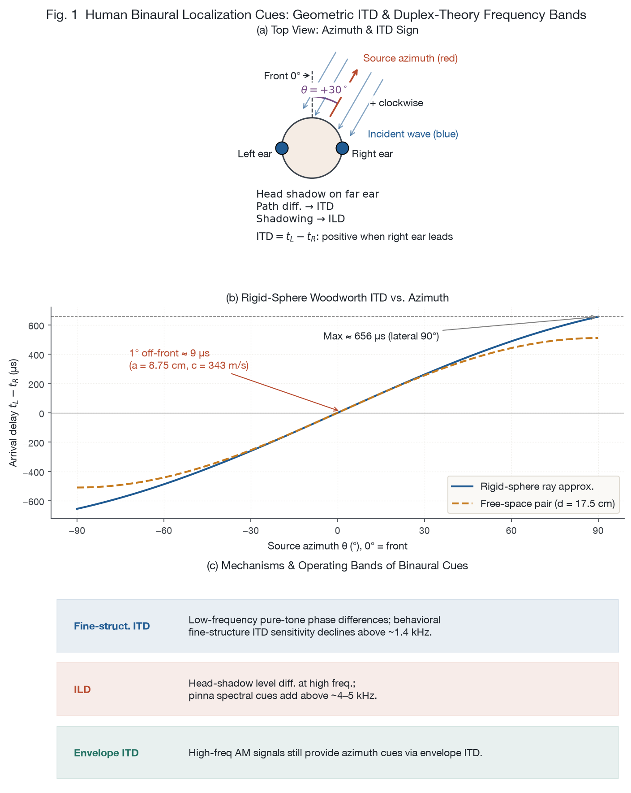

On this page
This is Chapter 1 of the main text; the book comprises 16 main and special-topic chapters (Chapters 0–15, where Chapter 0 covers mathematical foundations and Chapters 12–15 are four extended special topics), accompanied by Appendices A and B. This chapter can be read self-contained; navigation links appear below.
Overview: 🏠 Course Overview | Previous: Chapter 0 · Mathematical & Signal Analysis Foundations | Next: Chapter 2 · Acoustic Propagation & Array Signal Model
1. Starting from an Everyday Scenario: Problem Definition
Starting from far-field voice interaction in a living room, this chapter first clarifies what signals enter and what outputs leave sound source localization, beamforming, and source tracking, then works step by step by hand to answer two central questions: Why does summing and averaging waveforms recorded across multiple microphones suppress random noise floors? And if time delays are misaligned or noises are correlated across sensors, why can averaging fail to reduce noise—or even damage target speech and amplify sensor self-noise? Next, using human binaural hearing as a physical reference, we dissect the spatial information carried by interaural time differences, interaural level differences, and direction-dependent spectral cues, examining how far machine microphone arrays can borrow from human audition and where they obey fundamentally different physical laws.
After completing this chapter, you will be able to distinguish omnidirectional pressure microphones from directional pressure-gradient microphones and calculate Acoustic Overload Point (AOP) and dBFS–SPL conversions; derive the ideal four-microphone averaging gain under spatially white noise along with its exact validity assumptions; distinguish overall loudness scaling, uncentered mean-square power, centered variance, and component-wise Signal-to-Noise Ratio (SNR); calculate the low-frequency $1/f$ self-noise penalty hidden behind A-weighted ($\mathrm{dB(A)}$) MEMS microphone datasheet ratings; and contrast geometric propagation formulas against human psychoacoustic discrimination thresholds.
1.1 Task Definitions and Ideal Array Gains
1.1.1 The Distant-Speech Problem in a Living Room
Imagine sitting on your living-room sofa and asking a smart speaker 3 meters away, "What's the weather like today?" During a close-talking phone call, your lips sit just a few centimeters from the handset microphone, so direct speech dwarfs ambient noise; once you step back to 3 meters, however, direct speech attenuates substantially en route, and to hear your utterance clearly the speaker must contend simultaneously with five physically distinct classes of degradation:
- Ambient background noise: Air-conditioner airflow, street traffic outside the window, or refrigerator hum entering the microphones continuously from all directions.
- Room reverberation: Each syllable you utter bounces repeatedly off walls, floors, tabletops, and ceilings before arriving at the microphones in staggered waves; late reflections drag out long decaying tails that smear across subsequent syllables and blur consonant articulation.
- Off-axis competing talkers: Family members conversing nearby or a news anchor speaking on the television. Because these interferers share the exact harmonic and formant structure of natural speech, merely "detecting whether human voice is present" cannot tell who actually addressed the device.
- Microphone self-noise: Thermal Brownian agitation of the sensor diaphragm plus electronic noise generated inside the preamplifier ASIC itself. Even inside a perfectly soundproof anechoic chamber, self-noise persists; worse, if a downstream spatial algorithm applies large opposing positive and negative weights to cancel external interference, it will dramatically amplify this internal noise floor.
- Loudspeaker acoustic echo: Whenever the smart speaker is playing music, sound radiated by its own loudspeaker couples directly through the enclosure and reflects off room surfaces back into its microphones—often 10 to 30 dB louder than a talker 3 meters away. Unlike an external television, however, the device has internal access to the exact digital audio stream being sent to its loudspeaker as a known reference signal.
Confronted with this tangled acoustic field, a single microphone records only scalar sound-pressure fluctuations at one point in space, collapsing waves arriving from every direction irreversibly into a single one-dimensional waveform. Humans converse effortlessly at noisy cocktail parties largely because our left and right ears are separated in space. Inspired by this, machines deploy an array of synchronously sampled microphones observing the sound field simultaneously across distinct spatial positions: propagation arrival times, amplitude attenuation, and scattering frequency responses from a given source vary systematically with direction (whether a spherical wavefront at 3 meters can be approximated as a flat plane wave must be judged jointly from array aperture and acoustic wavelength—we derive the quantitative boundary in §2.2).
We emphasize synchronous sampling upfront because spatial time-delay cues are minuscule: sound in air travels at roughly $343\ \mathrm{m/s}$, covering about $2.14\ \mathrm{cm}$ in just $62.5\ \mu\mathrm{s}$ (precisely 1 sample period at a $16\ \mathrm{kHz}$ sampling rate). Only when all microphones share a common hardware sampling clock—so identical sample indices correspond to the same physical instant—do inter-channel sample offsets faithfully reflect acoustic path differences; uncalibrated clock skew or buffer slips inject artificial delays that corrupt directional estimates and can destructively cancel high-frequency target speech upon summation (Exercise E01-05 calculates by hand how a mere 1-sample misalignment penalizes high frequencies far more severely than low frequencies).
1.1.2 Three Spatial Processing Tasks
Given synchronized multichannel recordings, three interconnected yet distinct tasks revolve around spatial direction:
| Task | Intuitive Analogy | Core Question Answered |
|---|---|---|
| Sound Source Localization | Closing your eyes and judging where someone is calling from | At what directional angle (or spatial coordinate) relative to the array is the source located? |
| Beamforming | Focusing auditory attention toward the target talker | How should multichannel signals be combined to preserve target-direction sound while suppressing off-axis interference? |
| Source Tracking | Turning your head smoothly to follow someone walking across the room | How is the target moving over time, and does our bearing estimate remain reliable across brief speech pauses or occlusions? |
Tracing a synchronized four-channel recording through the table above highlights the clean division of inputs, outputs, and evaluation criteria across these three modules:
- Sound source localization ingests synchronized multichannel audio, analyzes inter-channel time delays, phase differences, or spatial spectra, and outputs one or more candidate bearing angles (plus range in near-field or distributed geometries). Localization algorithms typically attach a spatial-spectrum peak height or cross-correlation score to rank candidates; note carefully that this raw score measures phase-alignment coherence—it is not a calibrated probability that a physical source exists at that angle.
- Beamforming ingests multichannel audio, applies appropriate delay compensation and real/complex linear weights steered toward a designated target direction (either supplied dynamically by localization/tracking or fixed ahead of time toward broadside), and outputs an audio stream in which the target direction stands out while off-axis noise is attenuated.
- Source tracking ingests frame-by-frame directional observations from the localizer and recursively updates bearing and angular-velocity states through a dynamical motion model; when a talker pauses briefly between words (causing missing observations) or room reflections trigger single-frame angular outliers, the tracker smooths trajectories, coasts short-term predictions, and resolves which historical track owns each new observation when multiple talkers cross paths.
In practical pipelines, localization and tracking routinely feed real-time steering angles into an adaptive beamformer, yet their acceptance metrics must never be conflated: localization is judged by angular error, beamforming by target fidelity and noise suppression, and tracking additionally by missed-track rates and identity switches—a louder beamformer output never proves that the localizer found a more accurate angle.
Purely directional spatial filtering also obeys hard physical limits. If a target talker and a loud television sit along the same line of sight from the array, both waves traverse virtually identical inter-microphone delays and cannot be separated by far-field directional beamforming alone; moreover, because every physical array has finite size, its spatial acceptance zone behaves like a flashlight beam with nonzero angular width (the mainlobe beamwidth detailed in §2.6) rather than an infinitely thin geometric ray, allowing nearby interferers close to the target bearing to leak partially into the output.
Removing the device's own loudspeaker echo, stripping late room reverberation tails from the target talker, and unmixing co-directional or closely spaced overlapping talkers require, respectively, playback-referenced Acoustic Echo Cancellation (AEC), cross-frame linear prediction dereverberation, and speech separation—developed systematically across Chapters 6–8.
1.1.3 Physical Characteristics of Microphones and the Human Speech Band
Before mounting multiple microphones into a product, we must examine the transduction physics of a single sensor, its dynamic-range limits, and the frequency band occupied by human speech.
- Pressure (omnidirectional) vs. pressure-gradient (directional) microphones: The vast majority of commercial Micro-Electro-Mechanical Systems (MEMS) silicon microphones are pressure microphones—the rear of the diaphragm faces a sealed back cavity (vented only through a tiny barometric pressure-equalization hole), so the front senses scalar sound-pressure fluctuations at a single point in space. As long as the package dimensions remain much smaller than the acoustic wavelength, a pressure microphone responds almost equally to sound from every direction, exhibiting an omnidirectional pattern; precisely because an individual MEMS capsule is naturally non-directional, devices space multiple capsules into an array and synthesize spatial directivity via subsequent delay-and-weight processing. By contrast, a pressure-gradient microphone exposes both faces of the diaphragm to the sound field so that the net driving force is proportional to the pressure difference across the capsule, yielding a native bidirectional "figure-of-eight" ($\cos\theta$) pattern (superposing pressure and pressure-gradient responses in fixed ratios yields single-capsule cardioid or hypercardioid microphones). However, its physical acoustic differencing rolls off naturally at low frequencies and makes it highly vulnerable to close-range plosives, wind noise, and low-frequency proximity effect—so compact consumer-electronics arrays overwhelmingly favor omnidirectional MEMS capsules.
-
Sensitivity calibration, digital full-scale conversion, and Acoustic Overload Point (AOP): Acoustics references $0\ \mathrm{dB\ SPL}$ to the human hearing threshold $p_0 = 20\ \mu\mathrm{Pa}$, so $1\ \mathrm{Pa}$ RMS sound pressure corresponds to $20\log_{10}(1/20\times 10^{-6}) \approx 93.98\ \mathrm{dB\ SPL}$ (conventionally written $94\ \mathrm{dB\ SPL}$). Analog electret or analog MEMS microphones specify sensitivity in $\mathrm{dBV/Pa}$, whereas digital Pulse-Density Modulation (PDM) or $\mathrm{I^2S}$ MEMS microphones specify output level directly in decibels relative to digital full scale ($\mathrm{dBFS}$) under a $94\ \mathrm{dB\ SPL}$, $1\ \mathrm{kHz}$ stimulus. For a typical digital MEMS microphone rated at $S_{\mathrm{dBFS}} = -26\ \mathrm{dBFS}\ @\ 94\ \mathrm{dB\ SPL}$, arbitrary sound pressure level $L_{\mathrm{SPL}}$ converts to digital level $L_{\mathrm{dBFS}}$ via
$$ L_{\mathrm{dBFS}} = L_{\mathrm{SPL}} - 94 + S_{\mathrm{dBFS}}, \qquad L_{\mathrm{SPL,FS}} = 94 - S_{\mathrm{dBFS}}. $$
Plugging in $S_{\mathrm{dBFS}} = -26\ \mathrm{dBFS}$ immediately shows that digital full scale ($0\ \mathrm{dBFS}$) corresponds to $L_{\mathrm{SPL,FS}} = 120\ \mathrm{dB\ SPL}$; if the same capsule is rated at $65\ \mathrm{dB(A)}$ SNR, its Equivalent Input Noise (EIN) floor is $94 - 65 = 29\ \mathrm{dB(A)\ SPL}$. Hardware selection must also check the Acoustic Overload Point (AOP)—typically defined as the sound pressure level at which Total Harmonic Distortion (THD) reaches $10\%$ (commonly $120\text{--}135\ \mathrm{dB\ SPL}$ on commercial MEMS mics). When a smart speaker plays music at high volume, near-field acoustic coupling from the internal loudspeaker into adjacent microphones generates extreme peak SPLs: once peaks approach or exceed AOP, diaphragm or preamplifier nonlinearity clips severely, violating the linearity assumption of Chapter 6 acoustic echo cancellers and causing immediate AEC failure. 3. Human speech frequency band and sampling-rate baselines: Worked examples throughout this book repeatedly use a $16\ \mathrm{kHz}$ sampling rate and representative test frequencies such as $1\ \mathrm{kHz}$, $4\ \mathrm{kHz}$, and $7\ \mathrm{kHz}$, anchored directly to human vocal acoustics: adult voiced fundamental frequency spans roughly $85\text{--}255\ \mathrm{Hz}$ (lower for adult males, higher for females and children), vocal-tract formants governing vowel quality and primary speech intelligibility concentrate in $0.3\text{--}3.4\ \mathrm{kHz}$, and fine cues distinguishing unvoiced consonants and fricatives ("s/sh/f") extend through $4\text{--}8\ \mathrm{kHz}$. By Nyquist's sampling theorem, legacy narrowband telephony samples at $8\ \mathrm{kHz}$ (covering up to $4\ \mathrm{kHz}$), smart speakers and ASR front ends standardize on $16\ \mathrm{kHz}$ wideband sampling (covering up to $8\ \mathrm{kHz}$, used in most worked examples in this book), and professional conferencing, spatial audio, and wearable hear-through devices commonly adopt $48\ \mathrm{kHz}$ fullband sampling.
1.1.4 Distinguishing Loudness, Power, and Signal-to-Noise Ratio First
Before claiming that an array "reduced noise by $X$ dB," we must get the exact accounting right among waveform amplitude, mean-square power, variance, and SNR. Throughout this book, discrete time-domain average power is measured uniformly via the sequence mean square: for a real sequence $u[0], u[1], \ldots, u[N-1]$ of length $N$, square each sample, sum, and divide by $N$:
$$ P_u = \frac{1}{N}\sum_{n=0}^{N-1}u[n]^2. \tag{1-1} $$
In Eq. (1-1), $n$ denotes the zero-based sample index ($0$ to $N-1$) and $N$ the window length in samples. When $u[n]$ represents dimensionless digital full-scale amplitude normalized to $[-1, 1]$ after analog-to-digital conversion, $P_u$ is likewise dimensionless digital mean-square power. Transducer sensitivity and sound-pressure calibration convert it into mean-square pressure ($\mathrm{Pa}^2$). Acoustic power ($\mathrm{W}$) additionally requires an impedance and radiation-geometry model, or an intensity integral over a surface enclosing the source; a single pressure calibration is insufficient.
Observant readers may ask: why doesn't Eq. (1-1) subtract the sample mean first? Denoting the sample mean over these $N$ samples by $\bar u = \frac{1}{N}\sum_{n=0}^{N-1} u[n]$ and computing the mean-subtracted centered sample variance $V_N$ with the same denominator $N$, expanding the square reveals their exact identity:
$$ \begin{aligned} V_N &= \frac{1}{N}\sum_{n=0}^{N-1}\bigl(u[n]-\bar u\bigr)^2 \\ &= \frac{1}{N}\sum_{n=0}^{N-1} \bigl(u[n]^2 - 2\bar u\,u[n] + \bar u^2\bigr) \\ &= \frac{1}{N}\sum_{n=0}^{N-1}u[n]^2 - 2\bar u\left(\frac{1}{N}\sum_{n=0}^{N-1}u[n]\right) + \bar u^2 \\ &= P_u - 2\bar u^2 + \bar u^2 = P_u - \bar u^2. \end{aligned} $$
The identity $P_u = V_N + \bar u^2$ carries two immediate engineering lessons. First, real electret or silicon MEMS microphones and ADC front ends routinely exhibit a small DC offset, causing even a recording made in a quiet room to hover slightly above or below zero at $\bar u \neq 0$; evaluating Eq. (1-1) without mean subtraction or a DC-blocking high-pass filter lets inaudible DC energy $\bar u^2$ artificially inflate measured noise-floor power.
Second, even when a theoretical stochastic noise process has exact zero population mean ($\mathbb{E}[u[n]]=0$, where population mean square equals population variance), any finite $N$-sample realization will almost never have sample mean $\bar u$ equal to exact zero (Exercise E01-04).
In controlled simulations where clean target speech $s[n]$ and additive noise $v[n]$ are stored separately, evaluating Eq. (1-1) over the shared window $[0, N-1]$ yields target power $P_s$ and noise power $P_v$. This defines power-based Signal-to-Noise Ratio (SNR) and post-processing SNR gain $G$ (decibel scaling and power/amplitude conversions are reviewed in Chapter 0 §0.2):
$$ \begin{aligned} \mathrm{SNR} &= \frac{P_s}{P_v}, & \mathrm{SNR}_{\mathrm{dB}} &= 10\log_{10}\frac{P_s}{P_v}, \\ G_{\mathrm{dB}} &= 10\log_{10}G, & G &= \frac{\mathrm{SNR}_{\mathrm{out}}} {\mathrm{SNR}_{\mathrm{in}}}. \end{aligned} \tag{1-2} $$
Always check positivity of numerators and denominators before applying Eq. (1-2): $\mathrm{SNR}_{\mathrm{in}}$, $\mathrm{SNR}_{\mathrm{out}}$, and gain $G$ are finite positive numbers only when $P_{s,\mathrm{in}}$, $P_{v,\mathrm{in}}$, and $P_{v,\mathrm{out}}$ are all strictly positive. Three degenerate boundary cases require explicit handling:
- Pure-silence input segments ($P_{s,\mathrm{in}}=0$): Input SNR vanishes and cannot sit in the denominator of $G$—which is why Chapter 10 speech evaluations segment active speech from silence first.
- Complete anti-phase target cancellation ($P_{s,\mathrm{out}}=0$ with $P_{v,\mathrm{out}}>0$): Target speech present at the input is wiped out by anti-phase channel cancellation while noise survives, giving linear $\mathrm{SNR}_{\mathrm{out}}=0$ ($-\infty\ \mathrm{dB}$ in the limit).
- Noiseless alignment checks ($P_v=0$): Zero denominator leaves SNR undefined; measure target amplitude or mean-square power retention ratios directly instead of dividing by zero (Exercise E01-05).
In field recordings, we observe only the superimposed mixture $x[n]=s[n]+v[n]$, whose total power $P_x$ alone cannot uniquely separate $P_s$ from $P_v$ (expanding the square also introduces a target–noise cross-term, dissected in Exercise E01-07).
Build quick intuition with a minimal numerical check: suppose a single microphone has $P_s=1$ and $P_v=1$, giving linear $\mathrm{SNR}=1/1=1$ ($10\log_{10}1=0\ \mathrm{dB}$). A processor that preserves $P_s=1$ while cutting noise power to $0.25$ raises linear $\mathrm{SNR}$ to $4$ ($10\log_{10}4\approx 6.02\ \mathrm{dB}$); conversely, merely turning the volume knob down by half—multiplying both target and noise amplitudes by $0.5$—quarters both powers to $0.25$ and $0.25$: the audio sounds quieter, yet $\mathrm{SNR}=0.25/0.25=1$ ($0\ \mathrm{dB}$) has not improved by a fraction of a decibel.
1.1.5 Datasheet dBA SNR Ratings and the Low-Frequency Self-Noise Trap
When selecting hardware transducers, watch out for how commercial microphone datasheets report SNR. Opening a silicon MEMS microphone datasheet typically reveals a headline figure such as SNR = 65 dB(A): its numerator fixes a $1\ \mathrm{kHz}$, $94\ \mathrm{dB\ SPL}$ ($1\ \mathrm{Pa}$ RMS) sinusoidal reference power, whereas its denominator multiplies the sensor's anechoic self-noise power spectral density by the international standard IEC 61672-1 A-weighting power curve before integrating across the audio band (standard full band $20\ \mathrm{Hz}$–$20\ \mathrm{kHz}$).
Designed to mimic quiet-listening human equal-loudness contours referenced to $0\ \mathrm{dB}$ at $1\ \mathrm{kHz}$, A-weighting heavily attenuates low frequencies. Inspecting key IEC 61672-1 weights below shows that at $100\ \mathrm{Hz}$ only $\approx 0.0122$ of noise power is counted (filtering out nearly $98.8\%$), and at $50\ \mathrm{Hz}$ only about $0.00094$ remains. A MEMS microphone readout circuit can have $1/f$ flicker noise. The diaphragm vent resistance also generates thermal noise, whose input-referred spectrum depends on the vent and back-cavity acoustics (see Kim and Hall's equivalent circuit and Figure 2). The weights below attenuate both contributions at low frequencies:
| Frequency $f$ | Relative A-Weighting $A(f)$ | Linear Power Weight $g_{\mathrm{A}}^2(f)$ | Share of Noise Power Counted |
|---|---|---|---|
| $50\ \mathrm{Hz}$ | $-30.27\ \mathrm{dB}$ | $0.000939$ | $\approx 0.094\%$ |
| $100\ \mathrm{Hz}$ | $-19.14\ \mathrm{dB}$ | $0.012182$ | $\approx 1.22\%$ |
| $200\ \mathrm{Hz}$ | $-10.85\ \mathrm{dB}$ | $0.082298$ | $\approx 8.23\%$ |
| $500\ \mathrm{Hz}$ | $-3.25\ \mathrm{dB}$ | $0.473405$ | $\approx 47.3\%$ |
| $1000\ \mathrm{Hz}$ | $0.00\ \mathrm{dB}$ | $1.000000$ | $100\%$ (reference) |
| $2500\ \mathrm{Hz}$ | $+1.27\ \mathrm{dB}$ | $1.339883$ | $\approx 134\%$ |
For single-microphone direct human listening, A-weighting roughly tracks perceived hiss; once MEMS sensors are mounted into a compact array for differential or superdirective beamforming (derived quantitatively in Chapter 3 Worked Example 3-1 and Chapter 5 §5.3), however, the ranking can reverse. When inter-sensor spacing $d$ is much smaller than a wavelength, subtracting adjacent microphones cancels rear interference but also attenuates low-frequency target speech steeply along a sinusoidal curve; restoring flat target speech requires a back-end equalization filter boosting low-frequency power inversely proportional to $f^2$. In a band where the sensor self-noise spectrum is approximately $1/f$, the equalized output self-noise spectrum rises approximately as $1/f^3$. Budgeting low-frequency noise on compact arrays therefore demands unweighted self-noise power spectral density curves from the transducer vendor rather than a single $\mathrm{dB(A)}$ headline rating—Exercise E01-11 calculates a concrete reversal where a MEMS mic that wins by $\approx 1.59\ \mathrm{dB}$ in A-weighted total noise power over the $50\ \mathrm{Hz}$–$8\ \mathrm{kHz}$ wideband speech grid (and by $\approx 1.91\ \mathrm{dB}$ across the standard $20\ \mathrm{Hz}$–$20\ \mathrm{kHz}$ full audio band) ends up degrading speech-band output self-noise by $\approx 5\ \mathrm{dB}$ when mounted into a $1\ \mathrm{cm}$ differential pair.
1.1.6 Three Classes of Array Gain and White Noise Gain
How many decibels of noise an array removes depends critically on the spatial structure of the noise field. Engineering practice uses three distinct yardsticks matched to three canonical spatial noise models:
| Spatial Assumption on Input Noise / Interference | Core Metric | What This Metric Tells Us |
|---|---|---|
| Zero-mean, equal-power, mutually uncorrelated noise across channels | White Noise Gain (WNG) | Array SNR improvement over one mic under ideal independent self-noise; widely used to monitor sensor self-noise amplification |
| Equal-strength plane waves arriving isotropically from all directions | Directivity Index (DI) | Target-direction gain over background noise averaged over the full sphere (or horizontal circle), expressed in dB |
| Strong point-source interferer arriving from a specific bearing | Interferer Response / Null Depth | Attenuation in dB at that specific interferer bearing; characterizes only that angle, not quietness elsewhere |
The single most common point of confusion in this table is the word "white" inside WNG. In single-channel DSP, "temporally white noise" means flat power spectral density across all frequencies; White Noise Gain (WNG), by contrast, refers to spatially white noise—meaning that at a given frequency (or after target alignment), noise across distinct microphones is mutually uncorrelated (zero cross-channel expectation) with equal variance on every channel.
Spatial whiteness is a cross-channel statistical property completely distinct from single-channel spectral flatness: if you generate spectrally flat white noise and copy that identical waveform into four channels, the four noises are $100\%$ spatially coherent and averaging reduces zero noise; conversely, independent low-frequency $1/f$ circuit noises across four matched sensors are spectrally colored yet satisfy the spatially white assumption bin by bin.
Indoors, late reverberation after many wall bounces is often approximated as an isotropic diffuse field, making DI a useful proxy for diffuse-reverb suppression; as Chapter 5 (§5.3–§5.4) demonstrates, pushing low-frequency DI high on a compact aperture forces aggressive inter-channel subtraction that drives $\mathrm{WNG}_{\mathrm{dB}}$ negative (amplifying sensor self-noise), while deep directional nulls must always be evaluated alongside target distortion and pointing-error sensitivity.
1.1.7 From Summation to Averaging: How Four Microphones Deliver 6 dB
Let us derive the foundational array-gain benchmark by hand. Suppose a far-field target impinges on $M$ matched microphones whose arrival-time differences have already been compensated exactly. The $m$-th aligned channel ($m=1,\ldots,M$) reads
$$ x_m[n] = s[n] + v_m[n], $$
sharing identical aligned target waveform $s[n]$ of power $P_s=\mathbb{E}[s[n]^2]>0$ (even in the near field, compensating both propagation delays and spherical $1/r$ attenuation into common $s[n]$ obeys the same algebra). Assume additive noises $v_m[n]$ have zero mean ($\mathbb{E}[v_m[n]]=0$), equal variance ($\mathbb{E}[v_m[n]^2]=P_v>0$), and zero cross-channel correlation ($\mathbb{E}[v_m[n]v_\ell[n]]=0$ for $m\ne \ell$; expectation properties are reviewed in Chapter 0 §0.6), giving single-mic input $\mathrm{SNR}_{\mathrm{in}}=P_s/P_v$.
Step 1: Direct summation across $M$ channels. Denote raw sum $z[n]$ and equal-weight average $y[n]$ by:
$$ \begin{aligned} z[n] &= \sum_{m=1}^{M}x_m[n] = M s[n] + \sum_{m=1}^{M}v_m[n], \\ y[n] &= \frac{z[n]}{M} = s[n] + \frac{1}{M}\sum_{m=1}^{M}v_m[n]. \end{aligned} \tag{1-3} $$
Evaluate target and noise powers inside raw sum $z[n]$ separately:
- Coherent target addition: Summing $M$ identical copies of $s[n]$ produces $M s[n]$, scaling amplitude by $M$ and squared power to $\mathbb{E}\bigl[(M s[n])^2\bigr]=M^2 P_s$.
- Incoherent noise power addition: Expanding $\bigl(\sum_{m=1}^{M}v_m[n]\bigr)^2$ yields $M$ diagonal squares $v_m[n]^2$ plus $M(M-1)$ off-diagonal cross-products $v_m[n]v_\ell[n]$ ($m\ne\ell$)—e.g., $(v_1+v_2)^2 = v_1^2 + v_2^2 + 2v_1 v_2$ for $M=2$. Taking population expectation term by term gives:
$$ \begin{aligned} \mathbb{E}\!\left[\left(\sum_{m=1}^{M}v_m[n]\right)^2\right] &= \sum_{m=1}^{M}\mathbb{E}\bigl[v_m[n]^2\bigr] \\ &\quad + \sum_{m=1}^{M}\sum_{\substack{\ell=1\\\ell\ne m}}^{M} \mathbb{E}\bigl[v_m[n]v_\ell[n]\bigr] \\ &= M P_v + 0 = M P_v. \end{aligned} $$
Because cross-channel noises are uncorrelated, all $M(M-1)$ cross-terms vanish in expectation, leaving only $M$ diagonal terms: summed noise power grows only to $M P_v$ while target power grows to $M^2 P_s$.
Step 2: Dividing by $M$ for equal-weight averaging. Scaling $z[n]$ by $1/M$ into $y[n]$ divides both target and noise powers by $M^2$: output target power returns to single-mic scale $M^2 P_s / M^2 = P_s$, while output noise power shrinks to $M P_v / M^2 = P_v / M$. Substituting into Eq. (1-2) immediately yields output SNR and array gain:
$$ \begin{aligned} \mathrm{SNR}_{\mathrm{out}} &= \frac{P_s}{P_v/M} \\ &= M\,\mathrm{SNR}_{\mathrm{in}}, \quad G_{\mathrm{dB}} = 10\log_{10}M. \end{aligned} \tag{1-4} $$
Note that Eq. (1-4) expresses the ratio of population second moments ($\mathbb{E}[\cdot]$); computing per-clip finite-window SNRs across short clips and averaging afterward estimates a different statistic due to random finite-sample cross-terms and nonlinearity of ratios/logarithms. For $M=4$ microphones with $P_s=1$ and $P_v=1$, comparing single mic, raw 4-mic sum, and 4-mic average side by side makes every column transparent:
| Processing Mode | Output Target Power | Output Noise Power | Linear Output SNR | SNR Gain vs. 1 Mic |
|---|---|---|---|---|
| Single-microphone baseline | 1 | 1 | 1 | 0.00 dB |
| Aligned 4-mic raw sum $z[n]$ | 16 | 4 | 4 | 6.02 dB |
| Aligned 4-mic equal average $y[n]$ | 1 | 0.25 | 4 | 6.02 dB |
Notice in the bottom two rows that raw summation and equal averaging achieve identical output SNR ($4$, or $10\log_{10}4 \approx 6.02\ \mathrm{dB}$). Engineering pipelines prefer equal-weight averaging ($1/M$) because it preserves nominal target speech level—allowing fair A/B comparisons against a single mic and preventing fixed-point overflow clipping when summing many channels. Under spatially white noise, $8$ microphones yield $10\log_{10}8 \approx 9.03\ \mathrm{dB}$—every doubling of microphone count adds a fixed $10\log_{10}2 \approx 3.01\ \mathrm{dB}$ of ideal White Noise Gain.
Better still, elementary completing-the-square proves that among all distortionless linear weightings, equal averaging $w_m = 1/M$ already attains the theoretical ceiling on WNG. Applying real weights $w_1,\ldots,w_M$ to form $y[n] = \sum_{m=1}^{M}w_m x_m[n]$ yields target $\bigl(\sum_{m=1}^{M}w_m\bigr)s[n]$ and noise $\sum_{m=1}^{M}w_m v_m[n]$. Preserving target speech unscaled requires $\sum_{m=1}^{M}w_m = 1$, under which unit-variance spatially white noise ($P_v=1$) produces output noise power $\sum_{m=1}^{M}w_m^2$. Expanding squared deviations from $1/M$ without skipping a step gives:
$$ \begin{aligned} 0 &\le \sum_{m=1}^{M}\left(w_m-\frac{1}{M}\right)^2 \\ &= \sum_{m=1}^{M} \left(w_m^2 - \frac{2}{M}w_m + \frac{1}{M^2}\right) \\ &= \sum_{m=1}^{M}w_m^2 - \frac{2}{M}\sum_{m=1}^{M}w_m + M\cdot\frac{1}{M^2} \\ &= \sum_{m=1}^{M}w_m^2 - \frac{2}{M}\cdot 1 + \frac{1}{M} = \sum_{m=1}^{M}w_m^2 - \frac{1}{M}. \end{aligned} $$
Rearranging proves $\sum_{m=1}^{M}w_m^2 \ge \frac{1}{M}$, with equality if and only if $w_m = \frac{1}{M}$ for every $m$ (Chapters 2 and 5 extend this identical ceiling to complex frequency-domain weights via Cauchy–Schwarz). Under equal-amplitude aligned targets and equal-variance spatially white noise, no linear beamformer can ever exceed linear WNG $M$, and plain delay-and-sum hits that ceiling exactly.
Conversely, even when $\sum_{m=1}^{M}w_m = 1$ preserves target speech, choosing large opposing positive and negative weights to cancel directional interference (e.g., $w_1=2, w_2=-1$ in Exercise E01-09) drives $\sum_{m=1}^{M}w_m^2 \gg 1$, making output self-noise substantially louder than a single microphone. When sensor noises are no longer mutually independent like electronic thermal noise—such as HVAC airflow or room reverberation exhibiting spatial correlation—simulations cannot simply inject independent white noise into each channel; instead, channels must be linearly mixed according to their pairwise correlations (spatial noise coloring), and every physically valid correlation structure must obey the non-negative output-power bound under arbitrary linear weightings (Exercise E01-01 uses elementary completing-the-square to derive the exact lower bound $\rho \ge -1/3$ for equicorrelated four-channel noise, while the full complex spatial coherence square-root factorization contrasted against singular Cholesky boundaries is developed after introducing matrix notation in Chapter 2 §2.5.2 and Chapter 0 §0.3.3). Readers interested in how far-field arrays serve ASR engines may consult Kumatani, McDonough, and Raj, "Microphone Array Processing for Distant Speech Recognition: From Close-Talking Microphones to Far-Field Sensors" (IEEE Signal Processing Magazine, 29(6), 127–140, 2012) (public CMU course copy).
1.2 Three Binaural Localization Cues in Human Hearing
Before deriving arbitrary microphone array geometries, inspecting nature's evolved two-channel receiver—human left and right ears—builds invaluable physical intuition. Acoustically, our two ears act like sensors mounted on opposite sides of a rigid spherical baffle (the head) behind asymmetric directional waveguides (the pinnae), backed by active head motion, prior memory, and brainstem neural circuits. Figure 1 separates Interaural Time Difference, Interaural Level Difference, and directional spectral cues visually (on narrow screens, click open Figure 1 full resolution to zoom in):


Read Figure 1 sequentially along (a) → (b) → (c) from geometric acoustics to perceptual boundaries:
- Panel
(a)Top-down geometry and sign convention: Viewing the head from above with blue dots marking left and right ears, the vertical dashed black line defines straight-ahead $0^\circ$, with clockwise rightward bearings positive (purple arc marks a source at $\theta=+30^\circ$ front-right, red outward arrow points toward the source, and parallel slanted blue arrows depict incoming far-field wavefronts). Because the source sits on the right, wavefronts strike the ipsilateral right ear first while the contralateral left ear sits inside the head's acoustic shadow—forcing sound both to travel an extra creeping path around the head to reach the left ear (creating positive Interaural Time Difference $\mathrm{ITD}=t_L-t_R>0$) and to lose high-frequency energy to head shadowing (creating Interaural Level Difference $\mathrm{ILD}$). - Panel
(b)Theoretical ITD curves under two geometric models: Plotting arrival delay $t_L - t_R$ ($\mu\mathrm{s}$) against azimuth $\theta \in [-90^\circ, +90^\circ]$ at effective head radius $a=8.75\ \mathrm{cm}$ and $c=343\ \mathrm{m/s}$, comparing the solid blue curve (rigid-sphere creeping-ray approximation) against the dashed orange curve (unobstructed free-field point pair spaced at $17.5\ \mathrm{cm}$ with the head removed) reveals three features: first, near $\theta=0^\circ$ both curves overlap almost linearly at roughly $9\ \mu\mathrm{s}$ per $1^\circ$ shift (red annotation); second, toward lateral angles the free-field sine curve flattens out to $\approx 510\ \mu\mathrm{s}$ at $+90^\circ$, whereas the rigid-sphere curve—unable to tunnel straight through the skull—climbs to $\approx 656\ \mu\mathrm{s}$; third, odd symmetry makes left-hemisphere sources ($\theta\lt 0^\circ$) arrive at the left ear first with negative ITD. - Panel
(c)Operating regimes across three binaural cues: Stacked blue, red, and green bars compare pure-tone fine-structure ITD, ILD, and modulated high-frequency envelope ITD. The approximately $1.4\ \mathrm{kHz}$ limit refers to the behavioral pure-tone discrimination task described below, rather than a universal phase-locking cutoff for auditory nerve fibers. High-frequency sounds with slow modulation can still convey envelope ITDs, and near-field or scattered low-frequency sounds can exhibit ILDs. The rule "low frequencies use only ITD and high frequencies use only ILD" therefore misses useful cues.
1.2.1 Interaural Time Difference: Getting the Geometric Model Right
Interaural Time Difference (ITD) measures the arrival-time lag of a wavefront between the two ears. Following Figure 1(a) with $0^\circ$ straight ahead and clockwise bearings positive, denoting arrival instants at the left and right ears by $t_L$ and $t_R$ defines $\tau = t_L - t_R$: a right-side source ($\theta>0^\circ$) reaches the right ear earlier ($t_L > t_R$, so $\tau > 0$), while a symmetric left-side source gives $\tau \lt 0$.
Why does head diffraction produce extra path length $a\sin\theta + a\theta$? Trace the classic Woodworth high-frequency rigid-sphere ray model (Woodworth, Experimental Psychology, 1938; Woodworth and Schlosberg, 1954) step by step. Model the head as a rigid sphere of radius $a$ centered at origin $O$ with right ear $R$ at $(a, 0)$ and left ear $L$ at $(-a, 0)$. For a far-field plane wave arriving from front-right bearing $0 \le \theta \le \pi/2$ (unit source vector $(\sin\theta, \cos\theta)$, wavefront perpendicular to it):
- Ipsilateral straight-line lead $a\sin\theta$: Right ear $R$ sits on the illuminated hemisphere facing the source. Relative to the parallel reference wavefront passing through sphere center $O$, $R$ projects a distance $a\sin\theta$ closer to the source—so after striking $R$, the wavefront travels an additional straight distance $a\sin\theta$ before reaching the center reference plane.
- Contralateral creeping arc $a\theta$ from the tangent point: On the opposite side toward left ear $L$, one grazing ray touches the sphere tangentially at point $T$. Because radius $OT$ is perpendicular to the incident ray, tangent point $T$ lies on the same center reference wavefront passing through $O$. Moreover, the central angle subtended between $OT$ and left-ear radius $OL$ equals $\theta$ (in radians). Unable to penetrate the rigid skull past $T$, the wave creeps along the spherical arc of length $a\theta$ into the shadow zone to reach $L$.
Adding straight segment $a\sin\theta$ (from $R$ to the $O$–$T$ wavefront) to spherical arc $a\theta$ (from $T$ to $L$) gives total path difference $\Delta d = a(\theta + \sin\theta)$; dividing by sound speed $c$ (and extending to $-\pi/2 \le \theta \le \pi/2$ by odd symmetry) yields Woodworth's formula:
$$ \tau_{\mathrm{sphere}}(\theta) = \frac{a}{c}\bigl(\theta+\sin\theta\bigr). \tag{1-5} $$
Watch units carefully when evaluating Eq. (1-5) by hand: with $a$ in meters ($\mathrm{m}$) and $c$ in $\mathrm{m/s}$, the standalone angle $\theta$ inside the parentheses must be in radians ($\mathrm{rad}$) so $a\theta$ represents arc length in meters and the quotient has units of seconds ($\mathrm{s}$).
Substituting typical adult head radius $a = 8.75\ \mathrm{cm} = 0.0875\ \mathrm{m}$ and $c = 343\ \mathrm{m/s}$ reproduces both key landmarks on Figure 1(b):
-
Lateral extremum ($\theta = 90^\circ = \pi/2\ \mathrm{rad}$): Here $\sin(\pi/2)=1$ (one radius $a$ straight to the center plane) plus a quarter-circle creeping arc $\frac{\pi}{2}a$ around the head to the shadowed ear gives
$$ \begin{aligned} \tau_{\mathrm{sphere}}(90^\circ) &= \frac{0.0875}{343}\left(\frac{\pi}{2}+1\right) \\ &\approx 0.000655815\ \mathrm{s} \approx 656\ \mu\mathrm{s}. \end{aligned} $$
-
One-degree shift off midline ($\theta = 1^\circ$): Converting $\theta = \pi/180 \approx 0.0174533\ \mathrm{rad}$ with $\sin 1^\circ \approx 0.0174524$ gives $\tau_{\mathrm{sphere}}(1^\circ) \approx 8.9045\ \mu\mathrm{s}$ (annotated as $\approx 9\ \mu\mathrm{s}$ in Figure 1(b)). Note that $9\ \mu\mathrm{s}$ is the physical acoustic delay increment per degree near midline; whether human listeners can actually discriminate $9\ \mu\mathrm{s}$ must be measured empirically via psychoacoustic experiments rather than asserted from geometry alone.
By contrast, removing the head to leave two unobstructed free-field point microphones separated by $d = 2a = 17.5\ \mathrm{cm}$ replaces creeping arc $a\theta$ with a second straight projection $a\sin\theta$, yielding the free-field two-point delay formula:
$$ \tau_{\mathrm{free}}(\theta) = \frac{2a}{c}\sin\theta. \tag{1-6} $$
At $2a = 0.175\ \mathrm{m}$ and $\theta = 90^\circ$, the unobstructed maximum delay is only $0.175 / 343 \approx 510\ \mu\mathrm{s}$—roughly $146\ \mu\mathrm{s}$ shorter than around a spherical head. Near straight-ahead ($\theta \to 0$), first-order Taylor approximation $\sin\theta \approx \theta$ collapses both Eqs. (1-5) and (1-6) to $\frac{2a}{c}\theta$, explaining geometrically why the blue and orange curves hug each other near $0^\circ$ and diverge progressively toward $\pm 90^\circ$.
Keep in mind that Woodworth's formula is an asymptotic high-frequency ray approximation valid when wavelength is small relative to head size (small-angle limit $\approx \frac{2a}{c}\sin\theta$). In the low-frequency wave-scattering regime ($\kappa a = 2\pi f a / c \ll 1$, roughly $f \lesssim 500\ \mathrm{Hz}$ for an adult head), Kuhn (JASA, 62(1), 157–167, 1977) proved from rigid-sphere wave scattering that the effective ITD converges to
$$ \tau_{\mathrm{LF}}(\theta) \approx \frac{3a}{c}\sin\theta, $$
which is larger than the small-angle high-frequency ray limit $\frac{2a}{c}\sin\theta$ by a factor of $3/2$ ($1.5\times$)—reaching $\approx 765\ \mu\mathrm{s}$ at $\theta=90^\circ$ for $a=8.75\ \mathrm{cm}$ and $c=343\ \mathrm{m/s}$, compared with $656\ \mu\mathrm{s}$ for Woodworth's high-frequency ray limit and $510\ \mu\mathrm{s}$ for free-field points (the full spherical-scattering series calculation is carried out in Chapter 3 Exercise E03-17). Transitional frequency behavior and actual ear-canal offsets away from exact antipodes are analyzed in detail by Aaronson and Hartmann (JASA, 135(2), 817–823, 2014).
1.2.2 Level Differences, Fine Structure, and Envelopes Must Be Evaluated Separately
Beyond arrival timing, sound pressure level also differs across the ears. Interaural Level Difference (ILD) measures the level difference between right and left ears. At mid-to-high frequencies where wavelength is shorter than head diameter, the head casts an acoustic shadow over the far ear, dropping contralateral level substantially below ipsilateral level; at low frequencies where wavelength far exceeds head diameter, waves diffract effortlessly around the skull and ILD shrinks toward zero. Far-field binaural ILD thus arises primarily from frequency-dependent head scattering and shadowing rather than negligible free-field $1/r$ spreading across $17.5\ \mathrm{cm}$.
Throughout this book we define ILD as right-ear level minus left-ear level: louder right ear gives $\mathrm{ILD} > 0$, louder left ear gives $\mathrm{ILD} \lt 0$. Under this convention, a right-hemisphere source ($\theta>0^\circ$) simultaneously produces positive $\mathrm{ITD}=t_L-t_R>0$, positive $\mathrm{ILD}=L_R-L_L>0$, and positive right-minus-left phase difference $\mathrm{IPD}>0$, keeping sign intuition completely consistent; when transitioning to the Chapter 2 array model (§2.1.1, §2.3), keep one simple correspondence in mind—taking the left microphone (mic 1) as reference, the relative arrival delay at the right microphone (mic 2) is written $\tau_{21}=t_2-t_1=-\mathrm{ITD}$, so a right-side source gives $\tau_{21}\lt 0$ (mic 2 arrives earlier), while the frequency-domain steering phase factor $e^{-\mathrm{j}2\pi f\tau_{21}}=e^{+\mathrm{j}2\pi f\,\mathrm{ITD}}$ still yields a positive phase lead (when reading external papers, check whether left-minus-right is used instead; Exercise E01-08 verifies amplitude ratios, power ratios, and channel-gain offsets on ILD).
As early as 1907, Lord Rayleigh proposed in "On our perception of sound direction" that human localization relies primarily on interaural phase/time cues at low frequencies and interaural intensity cues at high frequencies—celebrated ever since as Duplex Theory. Modern psychoacoustics shows, however, that these cues do not flip like a hard mechanical switch at one cutoff frequency. Interpreting experimental data accurately requires separating two temporal scales: fine structure refers to rapid millisecond/sub-millisecond cycle-by-cycle carrier oscillations, whereas envelope refers to slower amplitude modulations riding atop the carrier—a $4\ \mathrm{kHz}$ tone has a tiny carrier period yet can carry a slow envelope fluctuating tens of times per second. The table below pairs accurate experimental findings from Figure 1(c) against overgeneralizations to avoid:
| Experimental Stimulus | Experimentally Supported Conclusion | Overgeneralization to Avoid |
|---|---|---|
| Headphone pure-tone fine-structure ITD | Under controlled discrimination tasks, human sensitivity to cycle-by-cycle pure-tone phase ITD tops out near $\approx 1.4\ \mathrm{kHz}$ | Assuming every temporal cue in every sound vanishes abruptly above $1.4\ \mathrm{kHz}$ |
| Directional Interaural Level Difference (ILD) | Head shadowing produces large mid/high-frequency ILDs, and near-field sources also create substantial low-frequency ILDs | Assuming that physical level differences are impossible below a fixed frequency |
| High-frequency sounds with slow amplitude envelopes | Even on multi-kilohertz carriers, interaural envelope timing shifts evoke clear lateralization | Inferring from envelope ITD sensitivity that auditory nerve fibers phase-lock to multi-kHz pure-tone carriers |
Where does the oft-cited "$\approx 1.4\ \mathrm{kHz}$" figure come from? Inspect the experimental protocol in Brughera, Dunai, and Hartmann (JASA, 2013, §II.A–B, pp. 2840–2843) (author institutional repository PDF): listeners wore headphones presenting equal-level $70\ \mathrm{dB\ SPL}$, $500\ \mathrm{ms}$ pure tones (shaped with $100\ \mathrm{ms}$ onset/offset ramps to eliminate transient click cues) in a two-interval forced-choice (2IFC) task—playing a first tone at $+\Delta\mathrm{ITD}/2$ (say $+10\ \mu\mathrm{s}$ right) followed by a second tone at $-\Delta\mathrm{ITD}/2$ ($-10\ \mu\mathrm{s}$ left, total jump $\Delta\mathrm{ITD}=20\ \mu\mathrm{s}$) and asking whether the second tone shifted left or right.
Thresholds were tracked via a 3-down, 1-up adaptive staircase: three consecutive correct answers shrank $\Delta\mathrm{ITD}$ by one step, making discrimination harder; a single mistake widened it, making the task easier. Treat the responses from the previous update until either the first mistake or three consecutive correct answers as one update cycle. If independent responses near threshold have approximately constant correct probability $p$, a cycle ends with a smaller difference with probability $p^3$ and a larger difference with probability $1-p^3$. Equal upward and downward step sizes balance at $p^3=1-p^3=0.5$, yielding $p=0.5^{1/3}\approx0.7937$ ($\approx79.4\%$).
Across listeners, individual cutoffs varied noticeably: the two most sensitive listeners still achieved finite thresholds at $1400\ \mathrm{Hz}$, whereas at $1450\ \mathrm{Hz}$ the staircase diverged for every subject regardless of phase shift—establishing the precise empirical meaning of fine-structure ITD sensitivity "up to $\approx 1.4\ \mathrm{kHz}$."
For high-frequency envelopes, Bernstein and Trahiotis (JASA, 2003) constructed $4\ \mathrm{kHz}$ transposed stimuli by half-wave rectifying and low-pass filtering low-frequency waveforms, then modulating that slow envelope onto a $4\ \mathrm{kHz}$ carrier. Although this carrier exceeds the behavioral pure-tone fine-structure ITD range described above, listeners could still use small interaural envelope delays to judge lateral direction. Envelope and carrier fine-structure sensitivity therefore need separate treatment.
Machine microphone arrays record and compare channel phases directly, without the behavioral pure-tone ITD threshold described above. At high frequencies they must instead resolve periodic $2\pi$ phase wrapping—spatial aliasing (analyzed in Chapters 2 and 3). Define single-frequency Interaural Phase Difference (IPD) as right-channel phase minus left-channel phase. Under a pure delay $\tau = t_L - t_R$ with nonzero magnitudes, right-minus-left phase equals $2\pi f\tau$ ($\mathrm{rad}$), which wraps indistinguishably every full cycle $2\pi$ ($360^\circ$).
Work out the numbers on a continuous $f = 2\ \mathrm{kHz}$ pure tone, whose period is $T = 1/2000 = 0.0005\ \mathrm{s} = 500\ \mu\mathrm{s}$:
- Compare $\tau_1 = +100\ \mu\mathrm{s}$ and $\tau_2 = +600\ \mu\mathrm{s}$: separated by one full $500\ \mu\mathrm{s}$ period, they yield identical wrapped phases $360^\circ \times 2000 \times 0.0001 = 72^\circ$ and $432^\circ \equiv 72^\circ\ (\bmod\ 360^\circ)$ at $2\ \mathrm{kHz}$. On a $17.5\ \mathrm{cm}$ free-field pair, however, physical delays cannot exceed $\pm 510\ \mu\mathrm{s}$ (Eq. (1-6)), ruling $+600\ \mu\mathrm{s}$ out geometrically.
- Now inspect a genuinely ambiguous pair: $\tau_1 = +450\ \mu\mathrm{s}$ (far front-right) vs. $\tau_2 = -50\ \mu\mathrm{s}$ (slight front-left). Both delays lie squarely inside the physically valid $[-510, +510]\ \mu\mathrm{s}$ interval while differing by exactly $500\ \mu\mathrm{s}$. At $2\ \mathrm{kHz}$, $+450\ \mu\mathrm{s}$ gives $+324^\circ$ and $-50\ \mu\mathrm{s}$ gives $-36^\circ$, which coincide modulo $360^\circ$ ($324^\circ - 360^\circ = -36^\circ$)—making left vs. right impossible to tell from $2\ \mathrm{kHz}$ alone. Because natural speech spans a wide bandwidth, if that same talker simultaneously radiates energy at $1\ \mathrm{kHz}$, the shared physical delay maps $+450\ \mu\mathrm{s}$ to $+162^\circ$ and $-50\ \mu\mathrm{s}$ to $-18^\circ$ at $1\ \mathrm{kHz}$, resolving the ambiguity cleanly.
Machine arrays resolve high-frequency phase aliasing via three levers: tighter inter-sensor spacing to shrink physically admissible delays, wideband phase-slope fusion across frequencies, or non-uniform sensor spacings (see §2.6 and §3.2, and listen to E04-16 Pure-Tone vs. Multi-Frequency TDOA alongside Audio Experiment Manual Section 26 after Chapter 4). Also remember that once enclosure scattering or transducer responses add frequency-dependent phase shifts, inter-channel phase ceases to equal pure $2\pi f\tau$ and cannot simply be divided by $2\pi f$ to read off geometric delay (Exercise E01-10 and §2.3).
1.2.3 Direction-Dependent Spectra and Head-Related Transfer Functions
If localization relied solely on left–right ITD and ILD, ambiguity would arise not only on the median sagittal plane ($\theta=0^\circ$, where left and right ears are symmetric and $\mathrm{ITD}=\mathrm{ILD}=0$), but also at any lateral azimuth $\theta\ne 0^\circ$ along a general cone of confusion—every circular cone coaxial with the interaural axis produces identical ITDs and near-identical ILDs on a symmetric spherical head. How, then, do humans distinguish front from back and up from down? The answer lies in the intricate ridges and cavities of the outer ear (pinna) plus head-and-torso reflections and diffraction: waves arriving from distinct elevations and front/back angles undergo micro-multipath interference just outside the ear canal, reinforcing certain frequency bands into spectral peaks while canceling others into spectral notches—stamping a directional "spectral fingerprint" onto incoming broadband sound. Classic studies by Hebrank and Wright (JASA, 56(6), 1829–1834, 1974) and Blauert (Spatial Hearing, MIT Press, 1997) demonstrate that median-plane elevation cues rely primarily on pinna spectral features across roughly $4\text{--}16\ \mathrm{kHz}$, notably concha-wall reflection notches whose center frequencies shift upward with elevation.
Acoustics captures this complete spatial filtering process via the Head-Related Transfer Function (HRTF): defined as the complex frequency response from a point source at a specified spatial coordinate to the left (or right) ear-canal entrance, divided by the free-field frequency response at the head-center reference point with the listener absent. Because a binaural HRTF pair records exact magnitude and phase across all frequencies, ITD, ILD, and pinna spectral notches are not three disconnected signals—they are phase, broadband-energy, and fine-spectral slices of one unified binaural transfer function pair.
Inferring direction from monaural or binaural spectral shape faces an inherent identifiability hurdle: the spectrum received at the ear equals unknown source spectrum multiplied by directional transfer function. If energy is weak around $6\ \mathrm{kHz}$, did a pinna notch carve it out, or did the sound source simply radiate little energy at $6\ \mathrm{kHz}$? A single pure tone probes only one spectral line and reveals zero spectral contour; only broadband sources let the auditory system inspect cross-frequency spectral profiles or form interaural complex ratios across active bins to cancel unknown shared source spectra (Exercise E01-10 demonstrates on a two-tap FIR pair how bin-wise ratios cancel source spectra exactly whereas broadband ILD shifts dramatically with source timbre). In natural hearing, the brain fuses ITD, ILD, broadband HRTF notches, and dynamic head-turn cues to resolve front–back and elevation ambiguities (reviewed comprehensively by Middlebrooks and Green, Annual Review of Psychology, 1991). The 3D spherical coordinate frames, elevation angles, and spherical-harmonic colatitude conversions needed when loading public measured HRTF databases (such as the Audio Engineering Society AES69 / SOFA standard) are presented systematically once 3D direction vectors are introduced in Chapter 3 §3.1.
1.2.4 Mapping Binaural Cues onto Machine Microphone Arrays
Indoors, wall reflections arrive just a few to a few dozen milliseconds after direct sound from completely different angles—yet in everyday conversation we still perceive speech as coming straight from the talker's mouth. Psychoacoustics terms this the precedence effect: when two similar sounds arrive in rapid succession within a short fusion window, perceived direction is dominated by the earliest-arriving direct wavefront (seminal experiments in Wallach, Newman, and Rosenzweig, 1949; modern review of time windows and breakdown boundaries in Brown, Stecker, and Tollin, 2015). Precedence does not mean early reflections are erased—they enrich perceived loudness and spaciousness, whereas excessive late reverberation still degrades speech intelligibility.
Mapping five pillars of human binaural hearing onto engineered microphone arrays sketches the roadmap for the rest of this book:
| Binaural Phenomenon or Observable | Machine Microphone Array Counterpart | Chapters |
|---|---|---|
| Interaural Time Difference (ITD) | Pairwise Time Difference of Arrival (TDOA) estimation coupled with array geometry | §4.2 |
| Head and pinna diffraction/shadowing | Cylindrical speaker enclosures, display bezels, and tabletops reshaping directional amplitude/phase | §3.2 |
| Head-Related Transfer Function (HRTF) | Calibrating or modeling directional complex response vectors (steering vectors) and full manifolds | §3.4, §10.2 |
| Precedence effect on early reflections | Separating beneficial direct + early reflections from late tails via WPE guard delay $\Delta$ | §2.4, §7.1 |
| Cocktail party effect in noisy rooms | Combining adaptive spatial beamforming with time-frequency separation and target tracking | Ch. 5, §8.1, Ch. 15 |
Comparing both columns reveals a clean principle: physical array geometry and enclosure acoustics dictate what spatial differences are observable at the sensors, while signal-processing and machine-learning algorithms dictate how cleanly those observables are distilled into enhanced target output.
Before writing equations, engineers must also ask who will listen to the output—a machine recognizer or human ears? ASR front ends typically collapse multichannel audio into a single monaural stream; hearing aids, AR/VR headsets, and smart glasses, however, must deliver left and right ear signals—feeding the identical monaural beamformer output into both earbuds forces their non-zero spectral ratio identically to $1$ ($\mathrm{ILD}=0\ \mathrm{dB}$, $\mathrm{IPD}=0$). This removes the interaural differences that distinguish left from right. If the mono signal still carries direction-dependent peaks and notches, listeners may still hear different elevations in the median plane, using the monaural spectral cues described above.
Cue-preserving binaural beamforming is developed in Chapter 5 §5.5, while irregular-array Binaural Signal Matching (BSM), air/in-ear cross-modal own-voice fusion, and sub-millisecond Hear-Through comb-filtering limits for glasses and TWS earbuds are derived in Chapter 14. Next, in Chapter 2, starting from basic propagation delays, we cast these physical phenomena into a rigorous mathematical array signal model.
1.3 Chapter Exercises
Exercises E01-01–E01-03 run via cross-chapter script exercises_spatial.py, and Exercises E01-04–E01-11 run via chapter script chapter01_experiments.py. Neither script requires internet access; run both directly from the repository root:
.venv/bin/python -m codes.chapters.ch00.cross_chapter.exercises_spatial
.venv/bin/python -m codes.chapters.ch01.chapter01_experiments
The first command is the shared spatial verification script across Chapters 1–5 (while studying Chapter 1, simply inspect E01-01–E01-03 at the top of the printout); the second command runs E01-04–E01-11 specifically. Every worked example and companion WAV in this chapter is generated deterministically from explicit mathematical models (using shared export gain $1$ to isolate physical mechanisms, distinct from real room recordings or subjective listening tests), retained in IEEE-754 float64 internally and rounded to displayed significant digits; complete 16-bit PCM quantization breakdowns and reproduction steps appear in Chapter Coding Exercises & Audio Experiments.
E01-01: Four Microphones Do Not Automatically Yield 6 dB
Target speech is already equal-amplitude aligned across four channels, while four zero-mean noises each have unit variance $\mathbb{E}[v_m^2]=1$ and uniform pairwise correlation $\rho$ across distinct channels ($\mathbb{E}[v_m v_\ell]=\rho$ for $m\ne\ell$). Under four-channel equal averaging, compute output noise power and SNR gain over a single microphone at $\rho=0$, $0.5$, and $1$, explaining why identical noise across all four channels cannot be reduced by averaging.
Reference Solution. Equal averaging produces output noise $v_{\mathrm{out}}=(v_1+v_2+v_3+v_4)/4$. Expanding the squared four-term sum inside the numerator yields $4$ diagonal squares $v_m^2$ plus $\binom{4}{2}=6$ distinct pairs each appearing twice ($v_m v_\ell$ and $v_\ell v_m$) for $12$ cross-product terms in total. Taking expectation with unit diagonals and pairwise correlation $\rho$ gives:
$$ \begin{aligned} P_{v,\mathrm{out}} &= \mathbb{E}\!\Bigl[ \bigl((v_1+v_2+v_3+v_4)/4\bigr)^2\Bigr] \\ &= \frac{4\times 1 + 12\rho}{16} = \frac{1+3\rho}{4}. \end{aligned} \tag{1-7} $$
Because aligned target power stays fixed at $P_s$, SNR improvement over one microphone equals $G = 1/P_{v,\mathrm{out}}$ ($10\log_{10}G$ in dB):
| Noise Correlation $\rho$ | Output Noise Power $P_{v,\mathrm{out}}$ | SNR Gain vs. 1 Mic |
|---|---|---|
| $0$ | $0.250$ | $6.02\ \mathrm{dB}$ |
| $0.5$ | $0.625$ | $2.04\ \mathrm{dB}$ |
| $1$ | $1.000$ | $0.00\ \mathrm{dB}$ |
Inspect the bottom row: at $\rho=1$, all four microphones record the identical zero-mean unit-power noise waveform ($v_1=v_2=v_3=v_4$); summing four identical copies and dividing by $4$ returns that identical noise waveform untouched. Multi-microphone averaging suppresses noise only insofar as distinct channels fluctuate independently and cancel partially upon addition—piling on more sensors never automatically suppresses strongly coherent interference.
Further Reflection: Can $\rho$ take arbitrary negative values? Looking at Eq. (1-7) algebraically suggests smaller $\rho$ always lowers noise, yet physically the mean-square power of any real linear combination can never be negative, locking $\rho$ into a strict admissible interval:
- Mean-square power of the raw sum $(v_1+v_2+v_3+v_4)$ equals $4(1+3\rho)\ge 0$, dividing by $4$ to force $\rho \ge -1/3$. Plugging $\rho=-0.4$ blindly into Eq. (1-7) produces impossible negative power $P_{v,\mathrm{out}}=-0.05$—proving no four-channel random process can ever have uniform pairwise correlation $-0.4$.
-
Mean-square power of any pairwise difference $(v_1-v_2)$ expands to:
$$ \begin{aligned} \mathbb{E}\bigl[(v_1-v_2)^2\bigr] &= \mathbb{E}[v_1^2] - 2\mathbb{E}[v_1 v_2] + \mathbb{E}[v_2^2] \\ &= 1 - 2\rho + 1 = 2(1-\rho) \ge 0, \end{aligned} $$
dividing by $2$ to force $\rho \le 1$.
-
Conversely, for arbitrary real weights $w_1,w_2,w_3,w_4$, expanding $\mathbb{E}\bigl[(\sum_{m=1}^4 w_m v_m)^2\bigr]$ rearranges to
$$ \mathbb{E}\!\left[\left(\sum_{m=1}^{4}w_m v_m\right)^2\right] = (1-\rho)\sum_{m=1}^{4}w_m^2 + \rho\left(\sum_{m=1}^{4}w_m\right)^2. $$
Paired with $4\sum_{m=1}^{4}w_m^2 \ge \bigl(\sum_{m=1}^4 w_m\bigr)^2$ proven earlier, every $-1/3 \le \rho \le 1$ guarantees non-negative power across all weights (generalized in Chapter 2 §2.5 and Appendix A §16.3 as positive semidefiniteness of the spatial covariance matrix).
For example, legal $\rho=-0.2$ gives $P_{v,\mathrm{out}}=0.1$ ($10\ \mathrm{dB}$ SNR gain)—not violating the $6.02\ \mathrm{dB}$ 4-mic WNG ceiling because negatively correlated noise is no longer spatially white; at singular boundary $\rho=-1/3$, ideal four-channel noise sums identically to zero, though any tiny independent sensor self-noise or gain mismatch immediately breaks perfect cancellation in hardware. Moreover, diffuse room correlation varies strongly with frequency and spacing (§2.6) rather than holding constant across broadband speech.
E01-02: Is a Quieter Sound Necessarily Cleaner?
Multiply length-4 sequence $[0,1,0,-1]$ uniformly by scale factor $0.5$, computing the mean-square power ratio and level change (dB). If both target speech and noise inside a noisy recording are multiplied by $0.5$, does SNR improve?
Reference Solution. Applying Eq. (1-1), squared entries $[0,1,0,1]$ give original mean square $(0+1+0+1)/4 = 0.5$; scaling by $0.5$ yields $[0, 0.5, 0, -0.5]$ with squared sum $0.25 + 0.25 = 0.5$ and mean square $0.5 / 4 = 0.125$.
The power ratio is $0.125 / 0.5 = 0.25$, corresponding to digital level change $10\log_{10}0.25 = 20\log_{10}0.5 \approx -6.02\ \mathrm{dB}$ (digital mean-square drop, not calibrated acoustic $\mathrm{dB\ SPL}$). Scaling both target and noise by $0.5$ multiplies numerator $P_s$ and denominator $P_v$ alike by $0.25$, canceling out identically and leaving SNR unchanged. Consequently, A/B listening comparisons across algorithms must share a common export gain—peak-normalizing each clip individually to full scale masks real target attenuation or noise boost.
E01-03: How Much Weight Should a Noisier Microphone Receive?
Two channels carry equal-amplitude aligned target speech plus zero-mean mutually uncorrelated noises of powers $P_{v_1}=1$ and $P_{v_2}=4$. Forming linear combination $y = w_1 x_1 + w_2 x_2$ subject to distortionless constraint $w_1 + w_2 = 1$, evaluate output noise power under equal averaging ($w_1=w_2=0.5$) first, then find the optimal weights minimizing output noise power.
Reference Solution. Constraint $w_1 + w_2 = 1$ keeps target output equal to $(w_1+w_2)s = s$. Because zero-mean noises are uncorrelated, cross-terms vanish and output noise power equals $w_1^2 P_{v_1} + w_2^2 P_{v_2}$:
- Under equal averaging ($w_1=w_2=0.5$), output noise power is $0.5^2\times 1 + 0.5^2\times 4 = 0.25 + 1.00 = 1.25$—worse than discarding microphone 2 and listening to clean microphone 1 alone (noise power $1$).
- Substituting $w_2 = 1 - w_1$ and completing the square locates the global optimum:
$$ \begin{aligned} P_{v,\mathrm{out}} &= w_1^2 \cdot 1 + (1-w_1)^2 \cdot 4 \\ &= 5w_1^2 - 8w_1 + 4 \\ &= 5(w_1 - 0.8)^2 + 0.8. \end{aligned} $$
Since $5(w_1 - 0.8)^2 \ge 0$, output noise attains its global minimum $0.8$ uniquely at $w_1 = 0.8$, $w_2 = 1 - 0.8 = 0.2$ (check: $0.8^2\times 1 + 0.2^2\times 4 = 0.64 + 0.16 = 0.8$).
This calculation delivers a fundamental engineering insight: a noisier microphone is not useless—weighting sensors inversely proportional to their noise variances ($1:1/4 = 4:1$, giving $0.2$ weight to mic 2) improves upon even the cleanest single microphone alone ($0.8 \lt 1.0$). When reporting dB gains, always state the baseline explicitly: optimal weighting improves upon equal averaging by $10\log_{10}(1.25/0.8)\approx 1.94\ \mathrm{dB}$, and upon single mic 1 by $10\log_{10}(1/0.8)\approx 0.97\ \mathrm{dB}$. Minimum Variance Distortionless Response (MVDR) beamforming in Chapter 5 generalizes this principle—"lock unit target gain, minimize output variance according to noise covariance"—to complex frequency-domain weights and arbitrary spatially correlated noise.
E01-04: Why Cross-Terms Cannot Be Dropped in Short Windows
Given deterministic length-4 sequences $v_1=[1,1,-1,-1]$ and $v_2=[1,-1,1,-1]$, evaluate uncentered Eq. (1-1) channel mean squares $P_1, P_2$, sample product mean $C_{12}$, and equal-average output mean square over all 4 samples first, then over just the leading 3 samples.
Reference Solution. For any window length $N$, squaring and averaging $\bigl(v_1[n]+v_2[n]\bigr)/2$ yields the exact algebraic identity without statistical approximations:
$$ \begin{aligned} P_{\mathrm{avg}} &= \frac{P_1+P_2+2C_{12}}{4}, \\ C_{12} &= \frac{1}{N}\sum_{n=0}^{N-1}v_1[n]v_2[n]. \end{aligned} \tag{1-8} $$
Here $C_{12}$ is the uncentered sample cross-moment (over the 3-sample prefix, $\bar v_1 = \bar v_2 = 1/3 \ne 0$, so $C_{12}$ differs from centered sample covariance). Plugging both windows in side by side:
| Window Slice | Samplewise $v_1[n]v_2[n]$ | $P_1, P_2$ | Cross-Term $C_{12}$ | Equal-Average Sequence | Average Output MS |
|---|---|---|---|---|---|
| All 4 samples ($N=4$) | $[1,-1,-1,1]$ | $1, 1$ | $0$ | $[1,0,0,-1]$ | $2/4=0.5$ |
| First 3 samples ($N=3$) | $[1,-1,-1]$ | $1, 1$ | $-1/3$ | $[1,0,0]$ | $1/3$ |
Checking Eq. (1-8): over $N=4$, $\bigl(1+1+2\times 0\bigr)/4 = 0.5$ ($10\log_{10}(1/0.5)\approx 3.01\ \mathrm{dB}$ below mic 1); over $N=3$, the uncanceled negative product gives $\bigl(1+1+2\times(-1/3)\bigr)/4 = 1/3$ ($10\log_{10}3 \approx 4.77\ \mathrm{dB}$ below mic 1). On finite windows, one can never drop $2C_{12}$ by appealing to asymptotic zero correlation—shifting window bounds alters finite-sample cross-terms noticeably (conversely, observing $C_{12}=0$ over 4 samples indicates empirical orthogonality, not stochastic independence).
E01-05: Why a One-Sample Misalignment Hurts High Frequencies Much More
At sampling rate $f_s = 16000\ \mathrm{Hz}$, two noiseless equal-amplitude sinusoidal target channels carry $s[n]$ and $1$-sample-delayed $s[n-1]$ (residual misalignment $1/f_s = 62.5\ \mu\mathrm{s}$). Averaging both channels directly without delay compensation, compute target amplitude and mean-square power retention at $f = 1\ \mathrm{kHz}$ vs. $f = 4\ \mathrm{kHz}$.
Reference Solution. Denote discrete angular frequency by $\Omega_{\mathrm{d}} = 2\pi f / f_s$ ($\mathrm{rad}/\text{sample}$) and set $s[n] = \cos(\Omega_{\mathrm{d}} n)$. Applying the sum-to-product cosine identity with $\alpha = \Omega_{\mathrm{d}} n$ and $\beta = \Omega_{\mathrm{d}}(n-1)$—half-difference $\frac{\alpha-\beta}{2} = \frac{\pi f}{f_s}$ and half-sum $\frac{\alpha+\beta}{2} = \Omega_{\mathrm{d}}(n - 0.5)$—reduces the unaligned average to:
$$ \begin{aligned} y[n] &= \frac{1}{2}\Bigl[\cos(\Omega_{\mathrm{d}} n) + \cos\bigl(\Omega_{\mathrm{d}}(n-1)\bigr)\Bigr] \\ &= \cos\!\left(\frac{\pi f}{f_s}\right) \cos\!\left(\Omega_{\mathrm{d}}\left(n-\frac{1}{2}\right)\right). \end{aligned} \tag{1-9} $$
The second cosine factor shifts the output waveform by half a sample relative to channel 1; the leading factor $\cos(\pi f/f_s)$ governs target amplitude retention (positive at both $1\ \mathrm{kHz}$ and $4\ \mathrm{kHz}$), squaring to $\cos^2(\pi f/f_s)$ for mean-square power retention:
| Target Frequency $f$ | Half-Angle $\pi f/f_s$ | Amplitude Retention | Power Retention | Target Level Loss |
|---|---|---|---|---|
| $1\ \mathrm{kHz}$ | $\pi/16$ | $0.9808$ | $0.9619$ | $-0.17\ \mathrm{dB}$ |
| $4\ \mathrm{kHz}$ | $\pi/4$ | $0.7071$ | $0.5000$ | $-3.01\ \mathrm{dB}$ |
The same $62.5\ \mu\mathrm{s}$ (1-sample) misalignment spans barely one-sixteenth of a cycle at $1\ \mathrm{kHz}$—losing just $0.17\ \mathrm{dB}$—yet spans a full quarter-cycle ($90^\circ$ quadrature) at $4\ \mathrm{kHz}$, halving target power ($-3.01\ \mathrm{dB}$), and reaches complete anti-phase cancellation at the $8\ \mathrm{kHz}$ Nyquist frequency ($\pi f/f_s = \pi/2$). Fixing this in a causal real-time pipeline cannot "peek into the future to advance lagging channel 2"; instead, we buffer leading channel 1 by 1 sample into $s[n-1]$, restoring full amplitude at the modest cost of 1 sample of shared bulk delay.
Companion Audio Comparison. The in-repo alignment_error audio group synthesizes a $2\ \mathrm{s}$ superposition of $1\ \mathrm{kHz}$ and $4\ \mathrm{kHz}$ tones (each tone peak amplitude $0.18$):
- Two-channel misaligned input:
alignment_array.wav - Uncompensated direct average (visibly muffled $4\ \mathrm{kHz}$ high tone):
alignment_unaligned.wav - Delay-aligned average after 1-sample buffer on leading mic:
alignment_aligned.wav - Clean reference sharing the 1-sample bulk delay:
alignment_reference.wav
Switching between the second and third clips makes the weaker $4\ \mathrm{kHz}$ tone in the unaligned average immediately audible; reading back the 16-bit PCM files over steady-state interval $[0.1, 1.9)\ \mathrm{s}$ measures amplitude attenuations of $-0.17\ \mathrm{dB}$ at $1\ \mathrm{kHz}$ and $-3.01\ \mathrm{dB}$ at $4\ \mathrm{kHz}$ (with the aligned clip matching the reference sample for sample), agreeing closely with Eq. (1-9) (details in Audio Experiment Manual).
E01-06: With a Head vs. Without a Head—How Much Does ITD Change?
Using spherical-head Eq. (1-5) and unobstructed free-field two-point Eq. (1-6) with $a=0.0875\ \mathrm{m}$ ($2a=0.175\ \mathrm{m}$) and $c=343\ \mathrm{m/s}$, evaluate theoretical ITDs at $0^\circ$, $1^\circ$, $30^\circ$, and $90^\circ$, state the sign rule for negative left-side bearings, and express the $90^\circ$ spherical-head maximum delay in sample periods at $16\ \mathrm{kHz}$.
Reference Solution. Convert degrees to radians via $\pi/180$ first: at $\theta=30^\circ=\pi/6\ \mathrm{rad}$ with $\sin 30^\circ=0.5$, the spherical-head formula gives $(0.0875/343)(\pi/6 + 0.5) \approx 261.122\ \mu\mathrm{s}$, whereas the free-field pair gives $(0.175/343)\times 0.5 \approx 255.102\ \mu\mathrm{s}$. Across all four bearings:
| Source Azimuth $\theta$ | Rigid Spherical Head ITD (Eq. (1-5)) | Free-Field Two-Point ITD (Eq. (1-6)) |
|---|---|---|
| $0^\circ$ | $0.000\ \mu\mathrm{s}$ | $0.000\ \mu\mathrm{s}$ |
| $1^\circ$ | $8.905\ \mu\mathrm{s}$ | $8.904\ \mu\mathrm{s}$ |
| $30^\circ$ | $261.122\ \mu\mathrm{s}$ | $255.102\ \mu\mathrm{s}$ |
| $90^\circ$ | $655.815\ \mu\mathrm{s}$ | $510.204\ \mu\mathrm{s}$ |
Because both $\theta$ and $\sin\theta$ are odd functions, moving to $-\theta$ on the left preserves magnitude and flips ITD negative. At $f_s = 16\ \mathrm{kHz}$, $655.815\ \mu\mathrm{s}$ at $90^\circ$ equals $0.000655815 \times 16000 \approx 10.493$ sample periods—a non-integer value underscoring that physical propagation delays vary continuously across space; restricting compensation to integer sample shifts leaves up to a $0.5$-sample residual alignment error (motivating fractional-delay filters and cross-correlation interpolation in Chapters 2 and 4).
Meanwhile, the $\approx 146\ \mu\mathrm{s}$ discrepancy at $90^\circ$ reminds us that flush-mounting microphones on a baffled smart-speaker enclosure vs. suspending them in free air requires matching the physical array manifold accordingly.
E01-07: How Much About SNR Can Total Mixture Power Actually Tell Us?
Fix length-4 target $s=[1,-1,1,-1]$ and superpose three known interferers: $v=[1,1,-1,-1]$, $v=s$, and $v=-s$. For each case, evaluate $P_s$, $P_v$, sample product mean $C_{sv}$, and mixture mean-square power $P_x$ of $x=s+v$: when all three share component $\mathrm{SNR} = 0\ \mathrm{dB}$, must total mixture power $P_x$ be the same?
Conversely, given only observed mixture $x=[2,0,-2,0]$, Proposal A claims $s=x/2, v=x/2$ while Proposal B claims $s=3x/4, v=x/4$: do both decompositions reconstruct the same $x$, and do they report the same SNR?
Reference Solution.
Step 1: Expand squared mixture power completely. Applying Eq. (1-1) across $N$ real samples yields the exact mixture-power identity:
$$ \begin{aligned} P_x &= \frac{1}{N}\sum_{n=0}^{N-1}\bigl(s[n]+v[n]\bigr)^2 = P_s + P_v + 2C_{sv}, \\ C_{sv} &= \frac{1}{N}\sum_{n=0}^{N-1}s[n]v[n]. \end{aligned} \tag{1-10} $$
Here $C_{sv}$ is the uncentered target–interference cross-moment within a single channel (distinct from inter-channel noise cross-moment $C_{12}$ in E01-04). Total mixture power equals $P_s + P_v$ if and only if $C_{sv}=0$.
Step 2: Identical component SNR, sharply different mixture power. Across all three cases, $s^2$ and $v^2$ equal $[1,1,1,1]$, giving $P_s = P_v = 1$ and true component $\mathrm{SNR} = 1/1 = 1$ ($0\ \mathrm{dB}$)—yet $C_{sv}$ varies from $+1$ to $-1$:
| Interferer $v$ | Samplewise $s[n]v[n]$ | Cross-Term $C_{sv}$ | Mixture $x=s+v$ | Mixture MS $P_x$ |
|---|---|---|---|---|
| $[1,1,-1,-1]$ | $[1,-1,-1,1]$ | $0$ | $[2,0,0,-2]$ | $1+1+0=2$ |
| $v=s$ (in-phase) | $[1,1,1,1]$ | $1$ | $[2,-2,2,-2]$ | $1+1+2=4$ |
| $v=-s$ (anti-phase) | $[-1,-1,-1,-1]$ | $-1$ | $[0,0,0,0]$ | $1+1-2=0$ |
Inspect the final row: anti-phase interference reduces the mixture to complete silence ($P_x=0$)—not because noise was cleanly removed, but because target and interferer canceled each other completely.
Step 3: From one observed mixture alone, component decomposition is non-unique. Given $x=[2,0,-2,0]$ ($P_x = (4+0+4+0)/4 = 2$):
- Proposal A ($s=v=[1,0,-1,0]$) has $P_s = P_v = 0.5$, $C_{sv} = 0.5$, checking $0.5 + 0.5 + 2\times 0.5 = 2$, with $\mathrm{SNR} = 0.5/0.5 = 1$ ($0\ \mathrm{dB}$);
- Proposal B ($s=[1.5,0,-1.5,0]$, $v=[0.5,0,-0.5,0]$) sums sample-for-sample to the same $[2,0,-2,0]$ with $P_s = 4.5/4 = 1.125$, $P_v = 0.5/4 = 0.125$, $C_{sv} = 1.5/4 = 0.375$, and $P_x = 1.125 + 0.125 + 2\times 0.375 = 2$—yet reports linear $\mathrm{SNR} = 1.125/0.125 = 9$ ($10\log_{10}9 \approx 9.54\ \mathrm{dB}$).
This establishes a fundamental principle of speech-enhancement evaluation: total mixture energy before and after processing can never uniquely determine true SNR gain—simulation benchmarks must evaluate separately stored clean/noise components passed through linear weights (Chapter 10 §10.5), while live field tests without clean references must pair speech/silence segmented estimates cautiously with multi-dimensional listening tests.
E01-08: Half the Amplitude on the Left—What Is the ILD?
Under our right-minus-left convention over a shared window and calibration scale, suppose right RMS amplitude is $A_R = 0.4$ and left RMS amplitude is $A_L = 0.2$. Compute ILD via both amplitude and power ratios; re-evaluate ILD after scaling both channels by $0.5$ vs. scaling only the right channel by $0.5$; finally, verify on five synthetic stereo WAVs whether earlier right-ear arrival and louder right-ear level must occur together.
Reference Solution.
Step 1: Connecting RMS amplitude ratio and mean-square power ratio. With mean-square powers $P_L, P_R$ and RMS amplitudes $A_L = \sqrt{P_L}$, $A_R = \sqrt{P_R}$ referenced to common $A_0 > 0$ ($A_L, A_R > 0$), subtracting $L_L = 20\log_{10}(A_L/A_0)$ from $L_R = 20\log_{10}(A_R/A_0)$ cancels $A_0$ identically:
$$ \mathrm{ILD} = L_R - L_L = 20\log_{10}\frac{A_R}{A_L} = 10\log_{10}\frac{P_R}{P_L}. \tag{1-11} $$
Physically meaningful ILD requires matched microphone sensitivities across left and right channels.
Step 2: Verifying $20\log_{10}$ vs. $10\log_{10}$ consistency. Amplitude ratio $A_R/A_L = 0.4/0.2 = 2$ gives $\mathrm{ILD} = 20\log_{10}2 \approx +6.02\ \mathrm{dB}$; squaring to powers $P_R = 0.16$ and $P_L = 0.04$ gives power ratio $0.16/0.04 = 4$ and $10\log_{10}4 \approx +6.02\ \mathrm{dB}$ identically (avoid the classic slip of plugging amplitude ratio $2$ into $10\log_{10}2 \approx 3.01\ \mathrm{dB}$).
Step 3: Common scaling vs. unilateral gain mismatch. Scaling both channels by $0.5$ turns RMS into $0.2$ and $0.1$ (ratio $2$, $\mathrm{ILD} = +6.02\ \mathrm{dB}$ unchanged); scaling only the right channel by $0.5$ equalizes both RMS values to $0.2$ and zeroes $\mathrm{ILD}$ ($0\ \mathrm{dB}$). In general, independent analog preamp gains or unlinked per-channel Automatic Gain Control (AGC) factors $g_L, g_R$ inject spurious bias $20\log_{10}(g_R/g_L)$—which is why binaural hearing aids and microphone arrays strictly forbid unlinked per-channel AGCs.
Step 4: Independent manipulation of ITD and ILD with PCM readback. We synthesize a $2\ \mathrm{s}$ ($f_s = 16000\ \mathrm{Hz}$) four-tone source $s[n]$ ($500, 800, 1300, 2400\ \mathrm{Hz}$, peak $0.08$ per tone, $20\ \mathrm{ms}$ linear ramps, zero-padded outside) and generate five stereo PCM16 WAVs via pure integer delay plus gain:
$$ \begin{aligned} x_L[n] &= g_L s[n-d_L], & x_R[n] &= g_R s[n-d_R], \\ \tau &= \frac{d_L-d_R}{f_s}, & f_s &= 16000\ \mathrm{Hz}. \end{aligned} \tag{1-12} $$
Fixing $d_R = 0$ and setting $d_L \in \{0, 8\}$ samples ($8/16000 = +500\ \mu\mathrm{s}$), each stereo WAV retains $32008$ frames to preserve the $8$-sample tail (listen at low volume over L/R-verified headphones):
| Stereo Audio Sample (Left Ch. 0, Right Ch. 1) | Left Delay $d_L$ | Gains $g_L, g_R$ | Analytical ITD | Analytical ILD |
|---|---|---|---|---|
| Reference: diotic in-phase, equal level | $0$ | $1, 1$ | $0\ \mu\mathrm{s}$ | $0.00\ \mathrm{dB}$ |
| Pure ITD shift | $8$ | $1, 1$ | $+500\ \mu\mathrm{s}$ | $0.00\ \mathrm{dB}$ |
| Pure ILD shift | $0$ | $0.5, 1$ | $0\ \mu\mathrm{s}$ | $+6.02\ \mathrm{dB}$ |
| Congruent cues (both right) | $8$ | $0.5, 1$ | $+500\ \mu\mathrm{s}$ | $+6.02\ \mathrm{dB}$ |
| Conflicting cues (time right, level left) | $8$ | $1, 0.5$ | $+500\ \mu\mathrm{s}$ | $-6.02\ \mathrm{dB}$ |
In consistent.wav, the right ear leads by $+500\ \mu\mathrm{s}$ and is $+6.02\ \mathrm{dB}$ louder; in conflicting.wav, the right ear still leads by $+500\ \mu\mathrm{s}$ while the left ear is $6.02\ \mathrm{dB}$ louder—making time–intensity trading palpably audible over headphones. Reading back cross-correlation ITD estimates and mean-square power ratios over steady-state windows from the 16-bit PCM files (analytical mean square $0.0128$ at gain $1$ and $0.0032$ at gain $0.5$), all five WAVs measure ITDs of $0\ \mu\mathrm{s}$ or $+500\ \mu\mathrm{s}$ and ILDs of $0.00\ \mathrm{dB}$ or $\pm 6.02\ \mathrm{dB}$, matching the analytical values above (parameters and verification digests in binaural audio manifest; reference implementation and audio notes in binaural_cues.py and Audio Experiment Manual).
E01-09: Preserving the Target Unchanged—Why Does Self-Noise Still Blow Up?
Given aligned two-microphone inputs $x_1 = s + v_1$ and $x_2 = s + v_2$ ($P_s > 0$) with zero-mean uncorrelated unit-power self-noises ($\mathbb{E}[v_1 v_2]=0$, $\mathbb{E}[v_1^2]=\mathbb{E}[v_2^2]=1$), evaluate target gain, output noise power, linear WNG, and $\mathrm{WNG}_{\mathrm{dB}}$ for $(w_1, w_2) = (0.5, 0.5)$ vs. $(w_1, w_2) = (2, -1)$, explaining why a negative weight fails to subtract independent noise power.
Reference Solution.
Step 1: Check distortionless target preservation. Output $y = (w_1+w_2)s + w_1 v_1 + w_2 v_2$ satisfies $0.5 + 0.5 = 1$ and $2 + (-1) = 1$, preserving target $s$ at output power $P_s$ in both cases.
Step 2: Expand squared output noise power. Because $\mathbb{E}[v_1 v_2]=0$, cross-term $2w_1 w_2 \mathbb{E}[v_1 v_2]$ vanishes, leaving the sum of squared weights:
$$ \begin{aligned} P_{v,\mathrm{out}} &= \mathbb{E}\bigl[(w_1 v_1 + w_2 v_2)^2\bigr] = w_1^2 + w_2^2, \\ \mathrm{WNG} &= \frac{P_s/(w_1^2+w_2^2)}{P_s/1} = \frac{1}{w_1^2+w_2^2}, \\ \mathrm{WNG}_{\mathrm{dB}} &= 10\log_{10}\mathrm{WNG}. \end{aligned} \tag{1-13} $$
Evaluating Eq. (1-13) across both weight pairs:
| Weight Pair $(w_1, w_2)$ | Target Gain $w_1+w_2$ | Output Noise Power $w_1^2+w_2^2$ | Linear WNG | $\mathrm{WNG}_{\mathrm{dB}}$ |
|---|---|---|---|---|
| $(0.5, 0.5)$ | $0.5+0.5=1$ | $0.5^2+0.5^2=0.5$ | $1/0.5=2$ | $+3.01\ \mathrm{dB}$ |
| $(2, -1)$ | $2-1=1$ | $2^2+(-1)^2=5$ | $1/5=0.2$ | $-6.99\ \mathrm{dB}$ |
Step 3: Why a minus sign cancels coherent signals yet adds independent noise. Under $(2, -1)$, identical target waveforms across both mics satisfy $2s - 1s = s$; independent thermal noises $v_1$ and $v_2$, however, fluctuate independently—inverting $v_2$ into $-v_2$ never makes it oppose $v_1$, so $(-1)^2 = +1$ adds directly onto $2^2 = +4$ to quintuple output self-noise.
Negative $\mathrm{WNG}_{\mathrm{dB}} \approx -6.99\ \mathrm{dB}$ indicates nearly $7\ \mathrm{dB}$ of SNR degradation relative to one microphone (not negative power)—the central physical price paid by compact differential and superdirective beamformers in Chapter 5 whenever large opposing weights subtract spatial interference.
E01-10: When Source Timbre Changes, How Does Binaural ILD Change?
Whereas E01-08 used frequency-flat gains and integer delays, fix a pair of two-tap Finite Impulse Response (FIR) filters $h_L=[1, 0.5]$ and $h_R=[1, -0.5]$ at sampling rate $f_s = 16000\ \mathrm{Hz}$ (zero-based indices, giving $y_L[n]=s[n]+0.5s[n-1]$ and $y_R[n]=s[n]-0.5s[n-1]$), and excite them successively with two $1\ \mathrm{kHz} + 7\ \mathrm{kHz}$ dual-tone sources:
- Flat source
flat: peak amplitudes $(0.1, 0.1)$ at $1\ \mathrm{kHz}$ and $7\ \mathrm{kHz}$; - Tilted source
tilted: peak amplitudes $(0.12, 0.04)$ (stronger low frequency, weaker high frequency).
Complete three tasks: (1) derive left/right frequency responses $H_L(f), H_R(f)$ and compute per-bin right-minus-left $\mathrm{ILD}(f)$ and $\mathrm{IPD}(f)$ at $1\ \mathrm{kHz}$ and $7\ \mathrm{kHz}$; (2) compute broadband output mean-square powers and broadband total $\mathrm{ILD}$ for flat vs. tilted, explaining why per-bin cues stay invariant while broadband $\mathrm{ILD}$ shifts sharply; and (3) identify the two classes of zero-locus failures where dividing out the source spectrum breaks down.
Reference Solution.
Step 1: Two-tap frequency responses via Euler's formula and time-shift. Denote discrete angular frequency by $\Omega_{\mathrm{d}} = 2\pi f / f_s$ ($\mathrm{rad}/\text{sample}$). Under our forward Fourier kernel $e^{-\mathrm{j}\Omega_{\mathrm{d}} n}$ (complex phasors and Euler's formula are reviewed in Chapter 0 §0.2.1), delaying $s[n-1]$ by 1 sample multiplies source spectrum $S(f)$ by $e^{-\mathrm{j}\Omega_{\mathrm{d}}}$, yielding output spectra $Y_L(f), Y_R(f)$ and squared magnitude responses:
$$ \begin{aligned} H_L(f) &= 1 + 0.5e^{-\mathrm{j}\Omega_{\mathrm{d}}}, & H_R(f) &= 1 - 0.5e^{-\mathrm{j}\Omega_{\mathrm{d}}}, \\ Y_L(f) &= S(f)H_L(f), & Y_R(f) &= S(f)H_R(f), \\ |H_L(f)|^2 &= 1.25 + \cos\Omega_{\mathrm{d}}, & |H_R(f)|^2 &= 1.25 - \cos\Omega_{\mathrm{d}}. \end{aligned} \tag{1-14} $$
Verify the bottom row by multiplying $H_L(f)$ with its complex conjugate:
$$ \begin{aligned} |H_L(f)|^2 &= \bigl(1+0.5e^{-\mathrm{j}\Omega_{\mathrm{d}}}\bigr) \bigl(1+0.5e^{\mathrm{j}\Omega_{\mathrm{d}}}\bigr) \\ &= 1 + 0.25 + 0.5\bigl(e^{-\mathrm{j}\Omega_{\mathrm{d}}} + e^{\mathrm{j}\Omega_{\mathrm{d}}}\bigr) \\ &= 1.25 + \cos\Omega_{\mathrm{d}}, \end{aligned} $$
while replacing $+0.5$ by $-0.5$ flips $H_R(f)$ to $1.25 - \cos\Omega_{\mathrm{d}}$ (strictly positive everywhere between $0.25$ and $2.25$).
Step 2: Canceling unknown source spectrum at active bins. Wherever $S(f)\ne 0$ and $H_L(f), H_R(f)\ne 0$, binaural complex ratio $B_{RL}(f) = Y_R(f)/Y_L(f)$ cancels unknown $S(f)$ cleanly:
$$ \begin{aligned} B_{RL}(f) &= \frac{Y_R(f)}{Y_L(f)} = \frac{H_R(f)}{H_L(f)}, \\ \mathrm{ILD}(f) &= 20\log_{10}|B_{RL}(f)|, \quad \mathrm{IPD}(f) = \arg B_{RL}(f). \end{aligned} \tag{1-15} $$
Here $\mathrm{ILD}(f)$ is per-bin right-minus-left level difference ($\mathrm{dB}$) and $\mathrm{IPD}(f) \in [-\pi, \pi)$ is principal-value right-minus-left phase difference ($\mathrm{rad}$; note $Y_R/Y_L$ and cross-spectrum $Y_R Y_L^*$ differ only by positive real $|Y_L|^2$, sharing identical principal argument). Rationalizing $B_{RL}(f)$ by multiplying numerator and denominator by $(1 + 0.5e^{\mathrm{j}\Omega_{\mathrm{d}}})$ gives:
$$ \begin{aligned} B_{RL}(f) &= \frac{\bigl(1-0.5e^{-\mathrm{j}\Omega_{\mathrm{d}}}\bigr) \bigl(1+0.5e^{\mathrm{j}\Omega_{\mathrm{d}}}\bigr)} {|1+0.5e^{-\mathrm{j}\Omega_{\mathrm{d}}}|^2} \\ &= \frac{0.75 + \mathrm{j}\sin\Omega_{\mathrm{d}}} {1.25 + \cos\Omega_{\mathrm{d}}}. \end{aligned} $$
Because $1.25 + \cos\Omega_{\mathrm{d}} > 0$ and real part $0.75 > 0$ (general quadrants require two-argument atan2), per-bin phase difference closes directly to $\mathrm{IPD}(f) = \arctan(\sin\Omega_{\mathrm{d}} / 0.75)$. Evaluating at $f_1 = 1\ \mathrm{kHz}$ ($\Omega_{\mathrm{d}}=\pi/8$) and $f_2 = 7\ \mathrm{kHz}$ ($\Omega_{\mathrm{d}}=7\pi/8$): opposite cosines ($\pm 0.9239$) swap left/right power gains and negate per-bin ILD, whereas identical sines ($0.3827$) yield the identical IPD $+27.03^\circ$:
| Frequency $f$ | Left Power Gain $\lvert H_L(f)\rvert^2$ | Right Power Gain $\lvert H_R(f)\rvert^2$ | Analytical Bin ILD | Analytical Bin IPD (R − L) |
|---|---|---|---|---|
| $1\ \mathrm{kHz}$ | $2.1739$ | $0.3261$ | $-8.24\ \mathrm{dB}$ | $+27.03^\circ$ |
| $7\ \mathrm{kHz}$ | $0.3261$ | $2.1739$ | $+8.24\ \mathrm{dB}$ | $+27.03^\circ$ |
Because this two-tap pair is dispersive rather than a pure delay, $\mathrm{IPD}(f)$ does not obey $2\pi f\tau$ and cannot be divided by $2\pi f$ to read off a single geometric delay.
Step 3: Broadband total ILD remains weighted by source spectrum. Over an integer-period steady-state window, $1\ \mathrm{kHz}$ and $7\ \mathrm{kHz}$ are orthogonal; by Parseval additivity with per-tone input mean-square power $P_{s,k} = A_{f_k}^2/2$, left broadband power is $P_L = P_{s,1}|H_L(f_1)|^2 + P_{s,2}|H_L(f_2)|^2$ (and similarly for $P_R$):
- Flat source
flat: each tone has input MS $0.1^2/2 = 0.005$, giving $P_L = P_R = 0.005\times(2.1739 + 0.3261) = 0.0125$ and broadband ILD $10\log_{10}(P_R/P_L) = 0.00\ \mathrm{dB}$; - Tilted source
tilted: input MS shifts to $0.12^2/2 = 0.0072$ and $0.04^2/2 = 0.0008$; with $h_L, h_R$ untouched, concentrating source power at $1\ \mathrm{kHz}$ (where left gain dominates) yields
$$ \begin{aligned} P_L &= 0.0072\times 2.1739 + 0.0008\times 0.3261 \approx 0.01591, \\ P_R &= 0.0072\times 0.3261 + 0.0008\times 2.1739 \approx 0.00409, \end{aligned} $$
shifting broadband ILD to $10\log_{10}(P_R / P_L) \approx \mathbf{-5.90\ \mathrm{dB}}$. Changing source timbre leaves per-bin transfer ratio $H_R(f)/H_L(f)$ invariant while shifting broadband total ILD substantially. Arithmetic averaging of per-bin dB values does not generally give broadband ILD; equality can hold in special cases, such as a constant left/right magnitude ratio across frequency.
Companion Audio Comparison. Comparing the second and fourth stereo outputs over headphones makes the leftward image shift under identical filters clearly audible (steady-state 16-bit PCM readbacks confirm broadband ILDs of $0.00\ \mathrm{dB}$ and $-5.90\ \mathrm{dB}$ with per-bin ILD and IPD remaining at $\mp 8.24\ \mathrm{dB}$ and $+27.03^\circ$; full quantization verification in spectral_cues.py and Audio Experiment Manual):
- Flat-spectrum mono source:
flat_source.wav - Flat-spectrum stereo output (broadband ILD $\approx 0\ \mathrm{dB}$):
flat_stereo.wav - Tilted-spectrum mono source:
tilted_source.wav - Tilted-spectrum stereo output (broadband ILD $\approx -5.90\ \mathrm{dB}$):
tilted_stereo.wav - Asset verification manifest:
MANIFEST.json
Step 4: Zero-locus failure boundaries. Canceling source spectra via Eq. (1-15) breaks down at two natural zero loci: first, source spectral nulls ($S(f)=0$), where both channels vanish into undefined $0/0$, requiring energy significantly above the noise floor before taking ratios; second, channel transfer zeros ($H_L(f)=0$ or $H_R(f)=0$)—e.g., changing taps to $h_L=[1, 1]$ and $h_R=[1, -1]$ zeroes $H_L$ at Nyquist ($\Omega_{\mathrm{d}} = \pi$, $\mathrm{ILD}\to +\infty$) and zeroes $H_R$ at DC ($\Omega_{\mathrm{d}} = 0$, $\mathrm{ILD}\to -\infty$), erasing phase references simultaneously. Moreover, mapping measured $B_{RL}(f)$ back to spatial azimuth still requires a pre-calibrated array manifold (§3.4).
E01-11: Silicon MEMS dBA SNR Trap and Differential Low-Frequency Self-Noise Budget
Hardware selection routinely encounters a striking reversal in which a MEMS microphone with a higher headline $\mathrm{dB(A)}$ SNR sounds noisier once mounted on a compact array (implemented in iec61672_a_weighting and differential_1f_noise_budget in spatial_coherence_and_dba.py): suppose Mic A has flat unweighted self-noise power spectral density $S_A(f) = S_0$, whereas Mic B halves high-frequency thermal noise but exhibits $1/f$ flicker noise with corner frequency $f_{\mathrm{c}} = 1000\ \mathrm{Hz}$, $S_B(f) = 0.5\,S_0(1 + 1000/f)$. Work through three calculations: (1) evaluate the unweighted self-noise ratio at $100\ \mathrm{Hz}$; (2) compute the A-weighted total self-noise power ratio over the $16\ \mathrm{kHz}$ wideband-speech grid $[50, 8000]\ \mathrm{Hz}$ ($10\ \mathrm{Hz}$ step, $796$ bins) and compare against the full IEC 61672-1 audio band $[20, 20000]\ \mathrm{Hz}$; and (3) mount two identical sensors into a $d = 1\ \mathrm{cm}$ endfire first-order differential array ($c = 343\ \mathrm{m/s}$), derive the distortionless-equalized output self-noise PSD, and compare Mic B vs. Mic A speech-band ($[100, 4000]\ \mathrm{Hz}$) noise penalty under continuous asymptotic integration vs. exact $10\ \mathrm{Hz}$ discrete summation.
Reference Solution.
Step 1: IEC 61672-1 A-weighting and endfire first-order differential equalization. IEC 61672-1 defines A-weighting via four pole frequencies $f_1 = 20.598997\ \mathrm{Hz}$, $f_2 = 107.65265\ \mathrm{Hz}$, $f_3 = 737.86223\ \mathrm{Hz}$, and $f_4 = 12194.217\ \mathrm{Hz}$, normalized to $0\ \mathrm{dB}$ at $1000\ \mathrm{Hz}$ ($R_{\mathrm{A}}(1000) \approx 0.7944$, offset $-20\log_{10}R_{\mathrm{A}}(1000) \approx +2.000\ \mathrm{dB}$).
For an endfire two-mic rear-null differential pair spaced at $d$ (see Chapter 3 Worked Example 3-1 and Chapter 5 §5.3), axial forward waves incur inter-mic phase lag $\phi_{\mathrm{d}} = 2\pi f d / c$ ($180^\circ$ rear waves incur $-\phi_{\mathrm{d}}$): delaying mic 2 by $e^{-\mathrm{j}\phi_{\mathrm{d}}}$ and subtracting from mic 1 nulls rear interference identically while giving forward complex gain $g_{\mathrm{tar}} = 1 - e^{-\mathrm{j}2\phi_{\mathrm{d}}}$ with $|g_{\mathrm{tar}}|^2 = 4\sin^2\phi_{\mathrm{d}}$. Meanwhile, subtracting two uncorrelated identically-distributed sensor self-noises doubles raw noise PSD to $2 S_{vv}(f)$; dividing by $g_{\mathrm{tar}}$ for unit distortionless forward response divides noise PSD by $4\sin^2\phi_{\mathrm{d}}$, canceling the factor of $2$:
$$ \begin{aligned} R_{\mathrm{A}}(f) &= \frac{f_4^2 f^4}{(f^2+f_1^2) \sqrt{(f^2+f_2^2)(f^2+f_3^2)}(f^2+f_4^2)}, \\ A(f) &= 20\log_{10}R_{\mathrm{A}}(f) - 20\log_{10}R_{\mathrm{A}}(1000), \\ S_{vv,\mathrm{out}}(f) &= \frac{S_{vv}(f)}{2\sin^2(2\pi f d/c)}. \end{aligned} \tag{1-16} $$
Denominator $2\sin^2(2\pi f d/c)$ in Eq. (1-16) is precisely the narrowband linear $\mathrm{WNG}(f)$ of the endfire first-order differential pair (at spatial-aliasing frequencies $f = k c/(2d)$ where $\sin(2\pi f d/c)=0$, forward target and rear null coincide and inverse equalization diverges).
Step 2: Comparing the datasheet dB(A) advantage vs. differential speech-band penalty. Substituting $S_A(f)=S_0$ and $S_B(f)=0.5 S_0(1+1000/f)$:
- Unweighted $100\ \mathrm{Hz}$ noise & differential boost: At $100\ \mathrm{Hz}$, $S_B(100)/S_A(100) = 0.5\times(1+10) = 5.5$ (
Mic Bis $+7.40\ \mathrm{dB}$ noisier); meanwhile, at $d = 0.01\ \mathrm{m}$, $100\ \mathrm{Hz}$ linear WNG is just $2\sin^2(2\pi/343) \approx 0.000671$ ($-31.73\ \mathrm{dB}$, amplifying self-noise power $\approx 1490\times$), climbing to $0.06636$ ($-11.78\ \mathrm{dB}$) at $1000\ \mathrm{Hz}$—spanning one decade (a $10\times$ frequency increase, $\approx 3.32$ octaves) yields an $\approx 20\ \mathrm{dB}$ jump ($19.95\ \mathrm{dB}$). - The A-weighted datasheet illusion across wideband speech vs. full audio band: On the $[50, 8000]\ \mathrm{Hz}$ grid ($10\ \mathrm{Hz}$ step, $796$ bins) relevant to $16\ \mathrm{kHz}$ speech pipelines, because
Mic Bapproaches $0.5 S_0$ across heavily weighted $1\text{--}8\ \mathrm{kHz}$ while A-weighting suppresses its low-frequency $1/f$ rise,Mic B's A-weighted total noise power is only $0.6926\times$Mic A's—givingMic Ba $+1.59\ \mathrm{dB}$ higher datasheetSNR (dBA)(integrating over the standard $[20, 20000]\ \mathrm{Hz}$ full audio band widens the high-frequency half-noise region further, lowering the A-weighted noise ratio to $0.6434$ and expandingMic B's headline advantage to $+1.91\ \mathrm{dB}$, e.g.,66.9 dB(A)vs.65.0 dB(A)). - Differential output noise across $[100, 4000]\ \mathrm{Hz}$ speech band: For $2\pi f d/c \ll 1$, $\sin(2\pi f d/c) \approx 2\pi f d/c$ cancels common geometry factors in the ratio, yielding exact rational asymptotic integrals:
$$ \begin{aligned} I_A &= \int_{100}^{4000} f^{-2}\,\mathrm{d}f = \frac{1}{100} - \frac{1}{4000} = \frac{39}{4000}, \\ I_B &= 0.5\int_{100}^{4000} \bigl(f^{-2} + 1000 f^{-3}\bigr)\,\mathrm{d}f \\ &= 0.5\left[\frac{39}{4000} + 500\left(\frac{1}{10^4} - \frac{1}{1.6\times 10^7}\right)\right] = \frac{1911}{64000}, \\ \frac{I_B}{I_A} &= \frac{1911/64000}{39/4000} = \frac{1911}{624} = \frac{49}{16} = 3.0625. \end{aligned} $$
Taking logarithms gives a continuous asymptotic penalty of $10\log_{10}(49/16) = 20\log_{10}(7/4) \approx +4.86\ \mathrm{dB}$; summing exact $\sin^2$ Eq. (1-16) across all $391$ discrete $10\ \mathrm{Hz}$ bins in $[100, 4000]\ \mathrm{Hz}$ (where steeper $f^{-3}$ weights the left endpoint $100\ \mathrm{Hz}$ slightly above the continuous integral) yields power ratio $3.179$ ($+5.02\ \mathrm{dB}$ worse). Leading on the datasheet by $1.6\text{--}1.9\ \mathrm{dB(A)}$ translates into an $\approx 5\ \mathrm{dB}$ penalty on a $1\ \mathrm{cm}$ differential array—a net swing of nearly $7\ \mathrm{dB}$. All synthetic audio clips across this chapter and beyond are cataloged in Chapter Coding Exercises & Audio Experiments—we encourage listening alongside the hand-worked tables above.
📄 Page Info: 1 figure | Back to Overview